<!doctype html>
<html lang="en">
<head>
  <meta charset="utf-8">
  <meta name="viewport" content="width=device-width, initial-scale=1">
  <title>arxiv digest — 2026-10-15</title>
  <style>
:root {
  --bg: #ffffff;
  --fg: #1f2328;
  --muted: #59636e;
  --border: #d0d7de;
  --card: #f6f8fa;
  --link: #0969da;
}
body {
  max-width: 980px;
  margin: 0 auto;
  padding: 2rem 1rem 5rem;
  font-family: -apple-system, BlinkMacSystemFont, "Segoe UI", Helvetica, Arial, sans-serif;
  line-height: 1.55;
  color: var(--fg);
  background: var(--bg);
}
a { color: var(--link); }
img { max-width: 100%; height: auto; }
pre, code { background: var(--card); border-radius: 6px; }
pre { padding: 1rem; overflow-x: auto; }
blockquote { border-left: 4px solid var(--border); padding-left: 1rem; color: var(--muted); }
details { margin: 0.6rem 0; }
summary { cursor: pointer; font-weight: 600; }
.paper-figures-scroll {
  display: flex;
  gap: 1rem;
  overflow-x: auto;
  overscroll-behavior-x: contain;
  padding: 0.75rem 0.25rem 1rem;
  margin: 1rem 0 1.25rem;
  border-top: 1px solid var(--border);
  border-bottom: 1px solid var(--border);
  scroll-snap-type: x proximity;
}
.paper-figure-card {
  flex: 0 0 min(260px, 72vw);
  scroll-snap-align: start;
  background: var(--card);
  border: 1px solid var(--border);
  border-radius: 12px;
  padding: 0.55rem;
}
.paper-figure-card img {
  display: block;
  width: 100%;
  max-height: 240px;
  object-fit: contain;
  background: white;
  border-radius: 8px;
}
.paper-figure-caption {
  display: block;
  margin-top: 0.5rem;
  color: var(--muted);
  font-size: 0.85rem;
}
.figure-strip-hint {
  color: var(--muted);
  font-size: 0.9rem;
  margin-bottom: -0.3rem;
}
</style>
  <script>
    window.MathJax = {
      tex: {
        inlineMath: [['$', '$'], ['\\(', '\\)']],
        displayMath: [['$$', '$$'], ['\\[', '\\]']],
        processEscapes: true,
        processEnvironments: true
      },
      options: {
        skipHtmlTags: ['script', 'noscript', 'style', 'textarea', 'pre', 'code'],
        ignoreHtmlClass: 'tex2jax_ignore',
        processHtmlClass: 'tex2jax_process'
      }
    };
  </script>
  <script id="MathJax-script" async
    src="https://cdn.jsdelivr.net/npm/mathjax@3/es5/tex-chtml.js"></script>
</head>
<body>
<header style="background-color: #333; color: white; padding: 15px; margin-bottom: 20px;">
  <h1 style="margin: 0; font-size: 24px;">
    <a href="https://ochelpan.github.io/arXiv_clean/" style="color: white; text-decoration: none;">Main</a>
  </h1>
</header>

<h1>Daily arXiv Report</h1>

<hr>
<p>
<a href="index.html">← Index</a>
 · <a href="papers_04.html">← Previous</a> · <a href="papers_06.html">Next →</a>
</p>
<hr>

<h2>Papers 81–100</h2>
<p><a id="paper-2610.18854"></a></p>
<h3 id="a-hierarchy-of-exact-lower-bounds-on-the-laughlin-spectral-gap"><a href="http://arxiv.org/abs/2610.18854v1">A hierarchy of exact lower bounds on the Laughlin spectral gap</a></h3>
<p><strong>Authors:</strong> Michael G. Scheer, Eslam Khalaf<br>
<strong>Type:</strong> theory · <strong>Category:</strong> strongly correlated electrons · <strong>PDF:</strong> <a href="https://arxiv.org/pdf/2610.18854v1">https://arxiv.org/pdf/2610.18854v1</a><br>
<strong>Analysis basis:</strong> full PDF text, analyzed in chunks
<strong>Topic relevance:</strong> <code>analog quantum simulation</code> <strong>1/5</strong></p>
<div class="figure-strip-hint">↔ Scroll figures horizontally</div>
<div class="paper-figures-scroll">
<figure class="paper-figure-card">
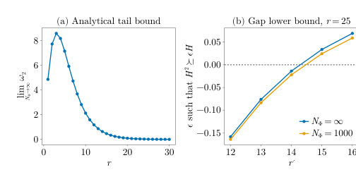
<figcaption class="paper-figure-caption"><b>Fig 1.</b> FIG. 1. (a) The tail bound ω2 in the thermodynamic limit NΦ →∞. We numerically compute these values using the upper bound in Eq. (C51) with N0 = 200. Strictly speaking, this is an upper bound on limNΦ→∞ω2 but the error due to the finite N0 value is less than that intrinsic to floating point arithmetic. (b) Spectral gap lower bounds for NΦ = ∞and NΦ = 1000 with r = 25. For NΦ = ∞, the last two data points are 0.0338 for r′ = 15 and 0.0693 for r′ = 16 (rounded down). For NΦ = 1000 the last two data points are 0.0245 for r′ = 15 and 0.0591 for r′ = 16 (rounded down).</figcaption>
</figure>
</div>

<p><strong>Summary.</strong> This paper presents a sophisticated mathematical framework to derive rigorous lower bounds on the spectral gap for models describing strongly correlated electrons, specifically those related to the Fractional Quantum Hall Effect. It employs a bootstrap approach based on semidefinite programming applied to the Hamiltonian squared. The work provides a general, powerful technique for converting computationally derived bounds into mathematically proven results.</p>
<p><strong>Why it may be interesting.</strong> The general methodology—turning numerical SDP bounds into rigorous proofs—is highly valuable for any theoretical physicist working on strongly correlated systems where exact spectral gap calculations are notoriously difficult.</p>
<details>
<summary>Detailed structure</summary>
<p><strong>Main problem.</strong> The primary goal is to derive exact, rigorous lower bounds on the spectral gap of the Laughlin spectral gap Hamiltonian.</p>
<p><strong>Main result.</strong> The authors develop a general method using semidefinite programming (SDP) and advanced mathematical techniques to establish these bounds, achieving results numerically exact up to solver precision.</p>
<p><strong>Method.</strong> The approach utilizes Knabe's observation ($H^2 \succeq \epsilon H$) and decomposes the Hamiltonian squared ($H^2$) into parts that are bounded analytically or via finite SDPs. Novel algorithms are introduced to convert numerical SDP bounds into rigorous mathematical proofs.</p>
<p><strong>Model / system.</strong> The study concerns the spectral gap of the first Haldane pseudopotential Hamiltonian, which models interacting electrons in the lowest Landau level on a sphere with $N_\Phi$ flux quanta, relevant to the Fractional Quantum Hall Effect.</p>
<p><strong>Key observables.</strong> The spectral gap ($\epsilon$), the lower bound on the gap, and the Hamiltonian itself.</p>
<p><strong>Important parameters / regimes.</strong> Flux quanta ($N_\Phi$), filling fraction ($
u$), and cutoff parameters ($r', r$) that determine the size of the SDP.</p>
<p><strong>Assumptions / limitations.</strong> The method relies on mapping the problem onto a structure suitable for $H^2 = K_1 + K_2$ decomposition, and later steps involve assuming the existence of limits and using symmetry averaging over SU(2).</p>
<p><strong>Figures summary.</strong> Not specified.</p>
<p><strong>Paper structure.</strong> The paper builds from the general principle of using SDPs on the spectral gap, applies this to the specific pseudopotential Hamiltonian via symmetry averaging, and culminates in developing rigorous algorithms to prove the derived numerical bounds in the thermodynamic limit.</p>
</details>
<details>
<summary>Abstract</summary>
<p>We develop a bootstrap approach to deriving lower bounds on the spectral gap of the first Haldane pseudopotential Hamiltonian on the sphere with $N_Φ$ flux quanta for arbitrary $N_Φ$, including in the thermodynamic limit $N_Φ\to \infty$. Our approach can in principle be generalized to pseudopotentials describing other model wavefunctions such as the Moore-Read state or Read-Rezayi sequence. Our approach is based on Knabe's observation that if $H$ is a Hamiltonian with ground state energy $0$ then the spectral gap is at least $ε> 0$ if and only if $H^2 \succeq εH$. To show this inequality, we split $H^2$ into two parts, one that can be analytically bounded and another that can be bounded using a finite semidefinite program (SDP). Crucially, the size of this program is determined only by cutoff parameters, and the program depends on $N_Φ$ only parametrically, allowing us to obtain numerically exact (up to solver precision) lower bounds on the gap. In order to turn these numerical bounds into mathematically rigorous bounds, we introduce an algorithm that can produce nearly-optimal exact feasible points for large rational SDPs. We additionally provide an algorithm that establishes the rank stability of the semidefinite program in the limit $N_Φ\to \infty$ which is needed to certify the bound in the thermodynamic limit. Beyond establishing the Laughlin gap and revealing a potential method for deriving spectral gap lower bounds for other pseudopotentials, our work provides a general method for turning numerical semidefinite programming bounds into rigorous mathematical proofs, which may have wide applicability.</p>
</details>
<p><sub><a href="#top">↑ back to top</a></sub></p>

<p><a id="paper-2610.18626"></a></p>
<h3 id="exact-microscopic-one-body-reduction-in-the-symmetric-exclusion-process"><a href="http://arxiv.org/abs/2610.18626v1">Exact Microscopic One-Body Reduction in the Symmetric Exclusion Process</a></h3>
<p><strong>Authors:</strong> Olivier Bénichou, Aurélien Grabsch<br>
<strong>Type:</strong> theory · <strong>Category:</strong> statistical mechanics · <strong>PDF:</strong> <a href="https://arxiv.org/pdf/2610.18626v1">https://arxiv.org/pdf/2610.18626v1</a><br>
<strong>Analysis basis:</strong> full PDF text, analyzed in chunks
<strong>Topic relevance:</strong> <code>non-equilibrium universality</code> <strong>1/5</strong></p>
<div class="figure-strip-hint">↔ Scroll figures horizontally</div>
<div class="paper-figures-scroll">
<figure class="paper-figure-card">
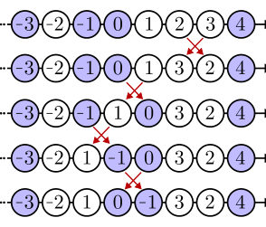
<figcaption class="paper-figure-caption"><b>Fig 1.</b> FIG. 1. Representation of the SEP as a stirring process [3]. At random times, picked with unit rate, two neighboring integers are exchanged (red arrows). A configuration of the SEP is obtained by filling the sites hosting a label that was initially occupied by a particle (blue). Note that exchanging the labels of two occupied sites yield the same SEP configuration.</figcaption>
</figure>
</div>

<p><strong>Summary.</strong> This work solves a major problem in non-equilibrium statistical mechanics by showing that the complex, many-body correlation dynamics of the Symmetric Exclusion Process (SEP) simplify exactly. The infinite hierarchy of equations collapses onto a single, linear equation equivalent to a single random walker's persistence problem. This establishes a fundamental, microscopic one-body description for the system's behavior.</p>
<p><strong>Why it may be interesting.</strong> The finding that a complex, interacting many-body system reduces exactly to a one-body problem before any scaling limit is taken provides a powerful, general organizing principle for understanding non-equilibrium dynamics in interacting particle systems.</p>
<details>
<summary>Detailed structure</summary>
<p><strong>Main problem.</strong> The paper addresses the challenge of determining the correlation profile in the Symmetric Exclusion Process (SEP), which is governed by an intractable, infinite many-body hierarchy of equations.</p>
<p><strong>Main result.</strong> They prove that the complex many-body problem reduces exactly to a simple, genuine one-body problem equivalent to a persistence problem for a single auxiliary random walker, even at finite time.</p>
<p><strong>Method.</strong> The authors employ advanced techniques involving the stirring representation, Bethe-ansatz calculations, and the use of Poisson transforms to derive a closed, linear equation for the correlation profile.</p>
<p><strong>Model / system.</strong> The system studied is the Symmetric Exclusion Process (SEP), a fundamental model for interacting particle transport on a lattice where particles undergo symmetric random walks subject to hard-core exclusion.</p>
<p><strong>Key observables.</strong> The correlation profile $\omega_r(t; \lambda)$ and the $n$-particle propagators $\langle \eta_{r_1}(t) \cdots \eta_{r_n}(t) 
angle$.</p>
<p><strong>Important parameters / regimes.</strong> Time ($t$), spatial lattice positions ($r$), and the coupling parameter $\lambda$. The analysis distinguishes between finite-time microscopic regimes and large-scale diffusive limits.</p>
<p><strong>Assumptions / limitations.</strong> The derivation relies on extending the microscopic Bethe-ansatz calculation and involves complex mathematical manipulations like contour deformations and expansions in the large-scale limit.</p>
<p><strong>Figures summary.</strong> Figure 1 illustrates the SEP as a stirring process, showing how the particle configuration is derived from the initial labeling of particles.</p>
<p><strong>Paper structure.</strong> The paper progresses by first identifying the many-body hierarchy, then developing the microscopic tools (Bethe ansatz, determinantal representations) to derive a closed, linear equation, and finally demonstrating that this equation is equivalent to a single random walker's persistence problem.</p>
</details>
<details>
<summary>Abstract</summary>
<p>The symmetric exclusion process (SEP) is a paradigmatic model of interacting particle transport. Its current--density correlations are governed by an infinite many-body hierarchy of equations. Only recently, this hierarchy was found to collapse at large scales onto a single closed equation. Is this remarkable simplification created by coarse graining, or does it reflect a deeper property already present in the microscopic dynamics? Here we show that the second scenario is realized. At arbitrary time on the lattice, the entire hierarchy collapses onto a single linear equation which is exactly equivalent to a persistence problem for a single auxiliary random walker. Thus an interacting many-body problem reduces exactly to a genuine one-body problem before any scaling limit is taken. This reduction determines the complete finite-time correlation profile, including during nonequilibrium relaxation. More broadly, the microscopic operator uncovered here opens a route to more general correlation functions in the SEP, and may point to a general organizing principle for nonequilibrium interacting particle systems.</p>
</details>
<p><sub><a href="#top">↑ back to top</a></sub></p>

<p><a id="paper-2610.17347"></a></p>
<h3 id="on-the-statistical-mechanics-of-attention"><a href="http://arxiv.org/abs/2610.17347v1">On the Statistical Mechanics of Attention</a></h3>
<p><strong>Authors:</strong> Jerry Yao-Chieh Hu, Yu-An Chen, Maojiang Su, Han Liu<br>
<strong>Type:</strong> theory · <strong>Category:</strong> disordered systems and neural networks · <strong>PDF:</strong> <a href="https://arxiv.org/pdf/2610.17347v1">https://arxiv.org/pdf/2610.17347v1</a><br>
<strong>Analysis basis:</strong> full PDF text, analyzed in chunks
<strong>Topic relevance:</strong> <code>Keldysh / 2PI / non-Gaussian methods</code> <strong>1/5</strong></p>
<div class="figure-strip-hint">↔ Scroll figures horizontally</div>
<div class="paper-figures-scroll">
<figure class="paper-figure-card">
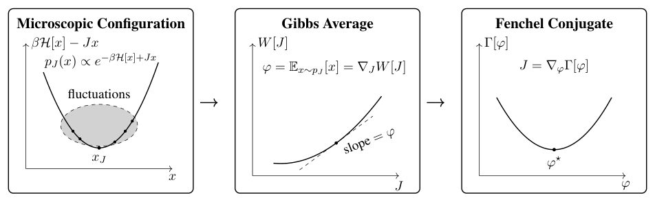
<figcaption class="paper-figure-caption"><b>Fig 1.</b> Figure 1: Illustration of the procedure from the microscopic to macroscopic energy land- scapes. Left. “(Microscopic) Fluctuations” means x is random, has nonzero variance, and follows Gibbs distribution pJ(x). Built from microscopic x, the local stable point xJ exhibits randomness. Middle. W[J] = log R</figcaption>
</figure>
<figure class="paper-figure-card">
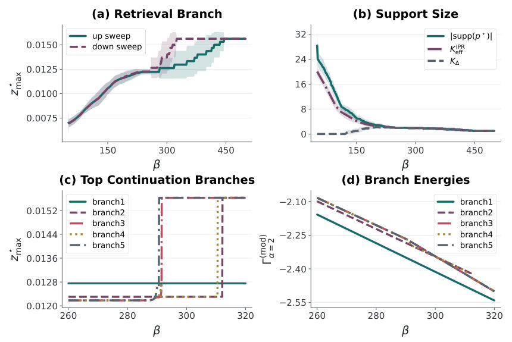
<figcaption class="paper-figure-caption"><b>Fig 2.</b> Figure 2: Temperature analysis of the retrieval structure of MHM in the sparse regime (α = 2). (M = 100, d = 64). Results are averaged over 10 random pattern realizations, and shaded regions indicate one standard deviation across different seeds. (a) Retrieval branches. The maximal overlap z⋆ max under up- and down-sweeps of β exhibits hysteresis. (b) Support size. We compare the exact support size (active components of the probability distribution p), the inverse participation ratio (IPR), and the fixed score-threshold count (Section F.2). (c) Top branches. We track the top five stable branches ranked by z⋆ max. (d) Branch energies. We show the corresponding free energies of those top five...</figcaption>
</figure>
<figure class="paper-figure-card">

<figcaption class="paper-figure-caption"><b>Fig 3.</b> Figure 3: Temperature analysis of the retrieval structure of MHM in the dense regime (α = 1). (M = 100, d = 64). Results are averaged over 10 random pattern realizations, and shaded regions indicate one standard deviation across different seeds. (a) Retrieval branches. The maximal overlap z⋆ max under up- and down-sweeps of β shows no hysteresis. (b) Support size. We compare the exact support size (active components of the probability distribution p) and the inverse participation ratio (IPR) (Section F.2). (c) Top branches. We observe one single stable branch across the entire range of β. (d) Branch energies. We show the corresponding free energy of the branch.</figcaption>
</figure>
<figure class="paper-figure-card">
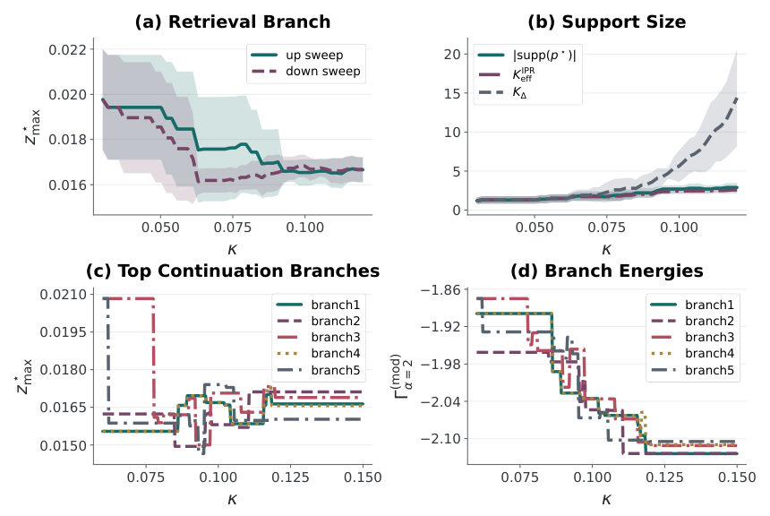
<figcaption class="paper-figure-caption"><b>Fig 4.</b> Figure 4: Memory-load analysis of the retrieval structure of MHM in the sparse regime (α = 2). (d = 48, β = 180). Results are averaged over 10 random pattern realizations, and shaded regions indicate one standard deviation across different seeds. (a) Retrieval branches. The maximal overlap z⋆ max under up- and down-sweeps of κ shows hysteresis. (b) Support size. We compare the exact support size |supp(p⋆)| (active components of the probability distribution p) and the inverse participation ratio (IPR) (Section F.2). (c) Top branches. We track the top five stable branches ranked by z⋆ max. (d) Branch energies. We plot the corresponding free energy of the five branches.</figcaption>
</figure>
<figure class="paper-figure-card">

<figcaption class="paper-figure-caption"><b>Fig 5.</b> Figure 5: Memory-load analysis of the retrieval structure of MHM in the dense regime (α = 1). (M = exp(κd), d = 48, β = 180). Results are averaged over random pattern realizations, and shaded regions indicate one standard deviation across different seeds. (a) Retrieval branches. The maximal overlap z⋆ max under up- and down-sweeps of κ shows no hysteresis. (b) Support size. We compare the exact support size (active components of the probability distribution p) and the inverse participation ratio (IPR) (Section F.2). (c) Top branches. We track and observe only a single stable branch across the entire range of κ. (d) Branch energies. We plot the corresponding free energy of the branch.</figcaption>
</figure>
</div>

<p><strong>Summary.</strong> This work applies statistical mechanics, specifically using free-energy formalisms derived from Hopfield models, to analyze the Transformer attention mechanism. It treats attention as an emergent physical process governed by energy minimization, allowing researchers to map out phase diagrams. This provides a rigorous theoretical framework for understanding when and why attention systems fail or become unreliable.</p>
<p><strong>Why it may be interesting.</strong> The deep connection between attention mechanisms (a core component of modern AI) and established concepts from spin-glass theory and associative memory provides a powerful, physics-based lens for understanding AI reliability.</p>
<details>
<summary>Detailed structure</summary>
<p><strong>Main problem.</strong> The paper aims to rigorously characterize the statistical mechanics of the Transformer attention mechanism to understand its operational regimes and critical thresholds for reliable inference.</p>
<p><strong>Main result.</strong> It establishes that attention emerges naturally from the free-energy minimization principle of a modern Hopfield model, allowing for the identification of first-order phase transitions between glassy and robust-inference states.</p>
<p><strong>Method.</strong> The authors employ a free-energy formalism, utilizing concepts from statistical mechanics like Tsallis entropy and Fenchel-Young duality, to analyze the energy landscape of the system.</p>
<p><strong>Model / system.</strong> The core model is the Transformer attention mechanism, which is mapped onto a Modern Hopfield Model (MHM). This model's dynamics are governed by a joint energy function involving query states and memory patterns.</p>
<p><strong>Key observables.</strong> Free-energy landscape ($\Gamma_\alpha$), phase structure, coexistence points ($eta_{coexist}$), and spinodal points ($eta_{sp}$).</p>
<p><strong>Important parameters / regimes.</strong> Attention temperature ($eta$), memory load, and the entropy parameter ($\alpha$) used in the Tsallis entropy generalization.</p>
<p><strong>Assumptions / limitations.</strong> The analysis often restricts attention to the deterministic regime (zero variance) and relies on assumptions of uniform distribution and well-separation for quantitative validation.</p>
<p><strong>Figures summary.</strong> Figures illustrate the derivation from microscopic fluctuations to macroscopic energy landscapes, and later show numerical validation of theoretical formulas for coexistence and spinodal points in two-key and general k-support systems.</p>
<p><strong>Paper structure.</strong> The paper builds from introducing the MHM and free-energy formalism, deriving key relationships via duality, and then validating the resulting theoretical predictions (coexistence/spinodal points) through numerical calculations on simplified memory systems.</p>
</details>
<details>
<summary>Abstract</summary>
<p>We revisit the statistical mechanics of Transformer attention via modern Hopfield models. We present a free-energy formalism to characterize parameter regimes and critical thresholds for robust attention inference. The resulting free-energy landscape incorporates randomness in query states and attention weights. Attention then emerges as the equation of motion of the corresponding statistical-mechanical system (i.e., modern Hopfield model) through the standard free-energy minimization principle. This allows us to identify first-order phase transitions in attention between glassy and robust-inference phases. We further extend to attentions with stochastic queries and keys. Together, our results provide a rigorous statistical-mechanics framework for characterizing phase structure and inference reliability across a family of Transformer attention mechanisms.</p>
</details>
<p><sub><a href="#top">↑ back to top</a></sub></p>

<p><a id="paper-2610.17286"></a></p>
<h3 id="quantum-cryptography-and-autoformalization-in-lean"><a href="http://arxiv.org/abs/2610.17286v1">Quantum Cryptography and Autoformalization in Lean</a></h3>
<p><strong>Authors:</strong> Maor Ben Shahar, Jonathan Morag, Dirk Englund, Kfir Sulimany<br>
<strong>Type:</strong> theory · <strong>Category:</strong> quantum information and computing · <strong>PDF:</strong> <a href="https://arxiv.org/pdf/2610.17286v1">https://arxiv.org/pdf/2610.17286v1</a><br>
<strong>Analysis basis:</strong> full PDF text, analyzed in chunks
<strong>Topic relevance:</strong> <code>quantum measurements</code> <strong>1/5</strong></p>
<div class="figure-strip-hint">↔ Scroll figures horizontally</div>
<div class="paper-figures-scroll">
<figure class="paper-figure-card">
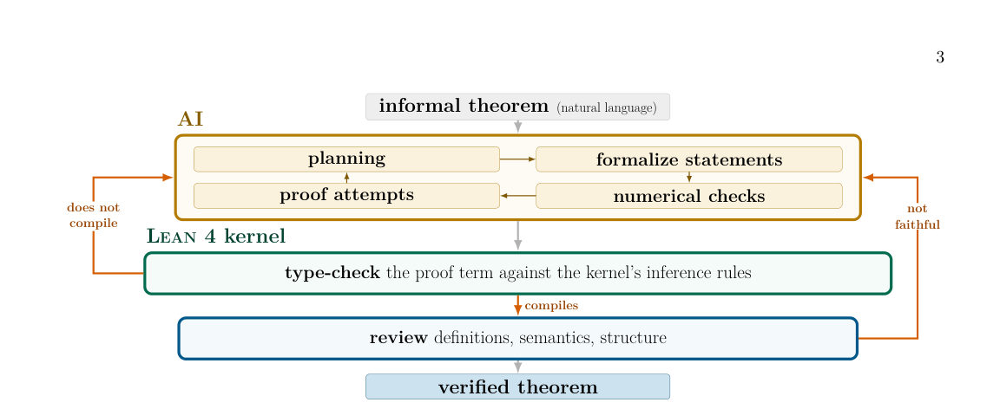
<figcaption class="paper-figure-caption"><b>Fig 1.</b> FIG. 1. The proving workflow and review. Agents develop statements, definitions, and candidate proofs. Kernel checking validates the formal derivation, while manual review checks the intended meaning of the formal objects and guides proof strategy and library organization.</figcaption>
</figure>
<figure class="paper-figure-card">

<figcaption class="paper-figure-caption"><b>Fig 2.</b> FIG. 2. The machine-checked BB84 development (read bottom-up). The LOCC protocol construction and reusable quantum-information theorems support the BB84 security, key-length, and robustness results. The highlighted box marks the improved conditional-entropy variance bound of Sec. V.</figcaption>
</figure>
</div>

<p><strong>Summary.</strong> This work develops a novel, machine-verified framework in the Lean proof assistant to rigorously prove the security of Quantum Key Distribution protocols like BB84. By formalizing the entire process, including finite-size effects and LOCC constraints, the authors eliminate ambiguity in security assumptions. This establishes a reproducible, automated standard for security proofs in quantum cryptography.</p>
<p><strong>Why it may be interesting.</strong> It demonstrates a powerful synergy between theoretical quantum information security and advanced formal verification tools (Lean), setting a new standard for rigorously proving quantum protocols.</p>
<details>
<summary>Detailed structure</summary>
<p><strong>Main problem.</strong> The paper addresses the challenge of establishing end-to-end, machine-verified security theorems for Quantum Key Distribution (QKD) protocols, specifically closing gaps in existing proofs due to mismatched assumptions.</p>
<p><strong>Main result.</strong> The authors provide the first end-to-end, machine-verified composable finite-key security proof for the entanglement-based qubit BB84 protocol against coherent attacks.</p>
<p><strong>Method.</strong> The core method involves formalizing the entire protocol and its security analysis within the Lean proof assistant, utilizing LLM-based autoformalization and a specialized Local Operations and Classical Communication (LOCC) language.</p>
<p><strong>Model / system.</strong> The focus is on the theoretical security analysis of the entanglement-based qubit BB84 protocol, modeling quantum operations using Kraus maps and defining security via the diamond norm distance between real and ideal quantum channels.</p>
<p><strong>Key observables.</strong> Security bound ($\epsilon_{	ext{QKD}}$), key rate (finite-size penalty), and the distinguishability between the real and ideal quantum channels.</p>
<p><strong>Important parameters / regimes.</strong> Finite block size, coherence of attacks, and the robustness bound ($\delta_{	ext{rob}}$) related to the abort probability.</p>
<p><strong>Assumptions / limitations.</strong> The security proof is fundamentally built upon the assumption of Local Operations and Classical Communication (LOCC).</p>
<p><strong>Figures summary.</strong> Figure 1 illustrates the AI-assisted proving workflow (AI agents $ o$ Lean kernel checking $   o$ manual review). Figure 2 details the machine-checked BB84 development using the LOCC construction.</p>
<p><strong>Paper structure.</strong> The paper develops a formal framework in Lean to model quantum protocols, applies this framework to the BB84 protocol to prove finite-key security, and discusses the integration of autoformalization pipelines to accelerate discovery.</p>
</details>
<details>
<summary>Abstract</summary>
<p>Quantum key distribution provides secure communication by relying on physics principles and mathematical reasoning. Security proofs across the field can contain gaps, often between individually valid theorems integrated under mismatched assumptions. We produce an end-to-end security theorem formalized in the Lean proof assistant, eliminating hidden hypotheses by building only on Lean's standard axioms. Our proof covers composable security of the entanglement-based qubit BB84 protocol against coherent attacks by the postselection technique, accounting for finite block size, and is written in a language that enforces local operations and classical communication to help ensure a faithful representation of the protocol. The proof itself was enabled by LLM-based autoformalization, and with the proof complete, we used the same pipeline as a discovery machine, reducing the finite-size penalty on the key rate. Our work sets a reproducible standard for security arguments in quantum cryptography and shows how formal proof engines can accelerate discovery across quantum information science.</p>
</details>
<p><sub><a href="#top">↑ back to top</a></sub></p>

<p><a id="paper-2610.17717"></a></p>
<h3 id="sampling-from-the-sherrington-kirkpatrick-model-up-to-criticality"><a href="http://arxiv.org/abs/2610.17717v1">Sampling from the Sherrington-Kirkpatrick Model up to Criticality</a></h3>
<p><strong>Authors:</strong> Hang Du, Brice Huang, Sidhanth Mohanty, Amit Rajaraman<br>
<strong>Type:</strong> theory · <strong>Category:</strong> disordered systems and neural networks · <strong>PDF:</strong> <a href="https://arxiv.org/pdf/2610.17717v1">https://arxiv.org/pdf/2610.17717v1</a><br>
<strong>Analysis basis:</strong> full PDF text, analyzed in chunks
<strong>Topic relevance:</strong> <code>analog quantum simulation</code> <strong>1/5</strong></p>
<div class="figure-strip-hint">↔ Scroll figures horizontally</div>
<div class="paper-figures-scroll">
<figure class="paper-figure-card">
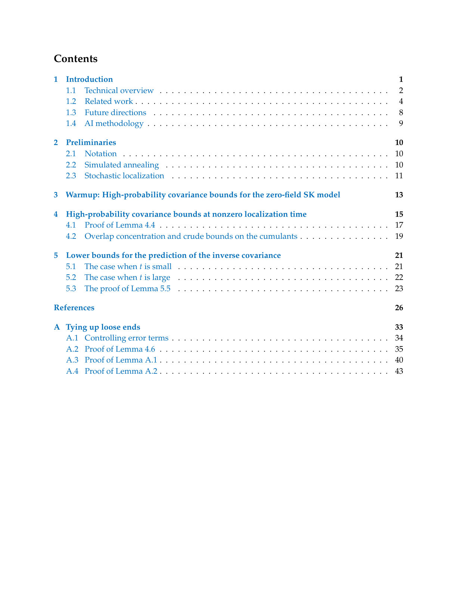
<figcaption class="paper-figure-caption"><b>Fig 1.</b> Low-resolution page preview, page 2</figcaption>
</figure>
<figure class="paper-figure-card">

<figcaption class="paper-figure-caption"><b>Fig 2.</b> Low-resolution page preview, page 3</figcaption>
</figure>
<figure class="paper-figure-card">
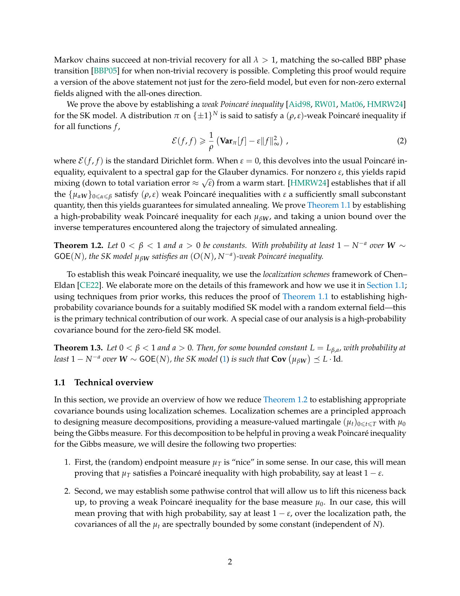
<figcaption class="paper-figure-caption"><b>Fig 3.</b> Low-resolution page preview, page 4</figcaption>
</figure>
<figure class="paper-figure-card">
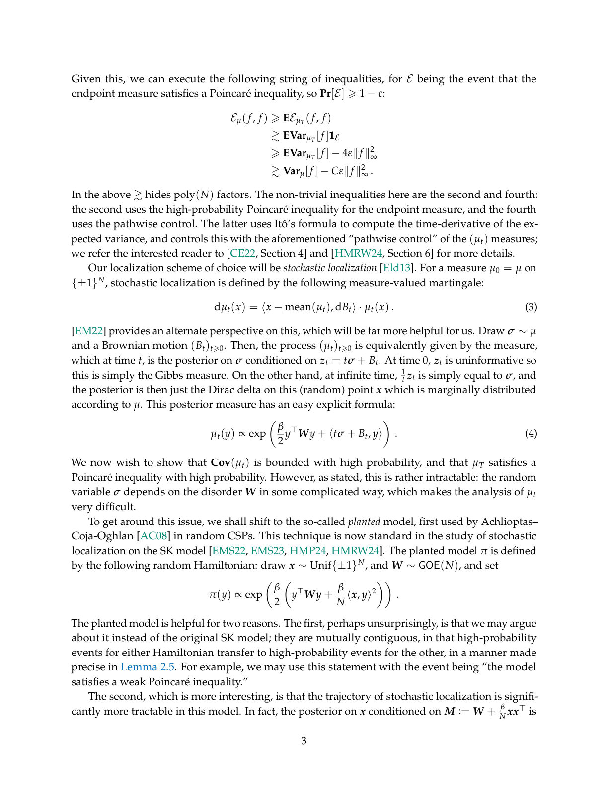
<figcaption class="paper-figure-caption"><b>Fig 4.</b> Low-resolution page preview, page 5</figcaption>
</figure>
<figure class="paper-figure-card">
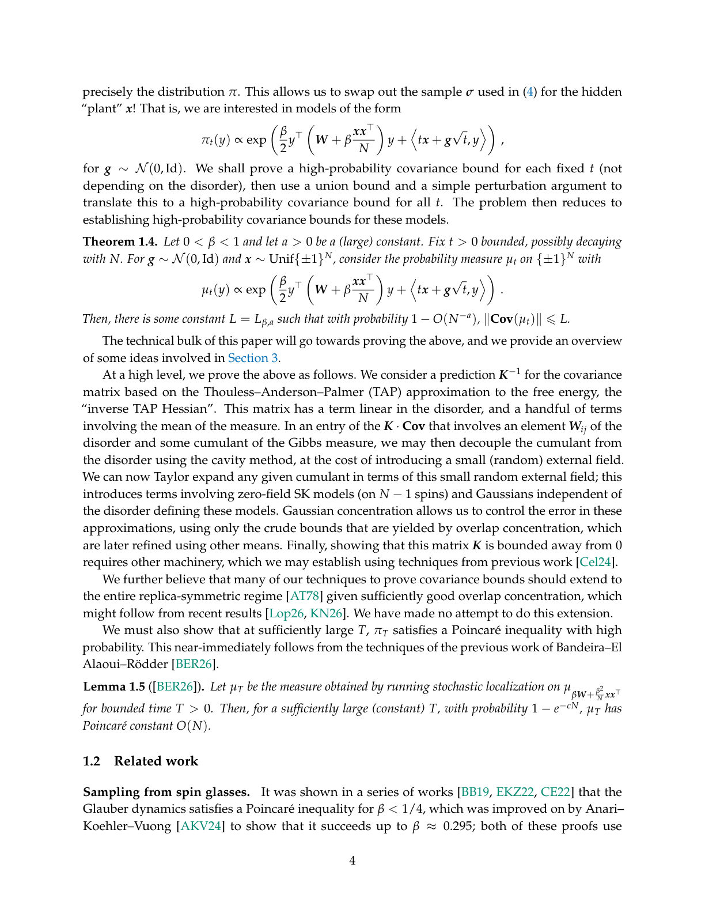
<figcaption class="paper-figure-caption"><b>Fig 5.</b> Low-resolution page preview, page 6</figcaption>
</figure>
</div>

<p><strong>Summary.</strong> This work provides a rigorous mathematical proof demonstrating that simulated annealing efficiently samples the Sherrington-Kirkpatrick spin glass model up to the critical temperature $eta < 1$. The authors achieve this by establishing key spectral properties, such as the weak Poincaré inequality, using advanced techniques involving stochastic localization and covariance bounding.</p>
<p><strong>Why it may be interesting.</strong> While focused on classical spin glasses, the techniques developed—such as using spectral gaps, Poincaré inequalities, and localization schemes to prove mixing times—are foundational tools applicable to analyzing quantum dynamics in complex, disordered quantum systems.</p>
<details>
<summary>Detailed structure</summary>
<p><strong>Main problem.</strong> The paper focuses on developing rigorous mathematical tools to prove efficient sampling from the Sherrington-Kirkpatrick (SK) model, particularly near the critical inverse temperature $eta < 1$.</p>
<p><strong>Main result.</strong> They prove that the simulated annealing algorithm can sample the SK model with an error bounded by $N^{-a}$ in total variation distance for all $eta < 1$.</p>
<p><strong>Method.</strong> The proof relies on establishing the weak Poincaré inequality and bounding the covariance matrix of the model's measure using stochastic localization techniques.</p>
<p><strong>Model / system.</strong> The primary model is the Sherrington-Kirkpatrick (SK) model, an Ising spin glass model defined by a Hamiltonian involving Gaussian random couplings $W \sim 	ext{GOE}(N)$.</p>
<p><strong>Key observables.</strong> Total Variation Distance (dTV), Weak Poincaré Inequality constant, Covariance matrix ($    ext{Cov}<em W _eta="eta">{\mu</em>$), and various derivatives of order parameters ($\lambda(B), r(B)$).}</p>
<p><strong>Important parameters / regimes.</strong> Inverse temperature $eta$ (studied for $0 \le eta < 1$), System size $N$, and the accuracy parameter $a$.</p>
<p><strong>Assumptions / limitations.</strong> The analysis often requires shifting to a more tractable 'planted model' and relies on bounding expectations of norms of tensors using Gaussian moment estimates.</p>
<p><strong>Paper structure.</strong> The development builds from establishing covariance bounds (Theorem 1.3) to proving the weak Poincaré inequality (Theorem 1.2), which finally enables the main result regarding efficient sampling via simulated annealing (Theorem 1.1).</p>
</details>
<details>
<summary>Abstract</summary>
<p>We prove that the simulated annealing algorithm efficiently samples from the Sherrington-Kirkpatrick model at inverse temperature $β< 1$ to an arbitrary inverse polynomial accuracy in total variation.</p>
</details>
<p><sub><a href="#top">↑ back to top</a></sub></p>

<p><a id="paper-2610.18202"></a></p>
<h3 id="theory-of-trotter-error-with-variable-weight-schedules"><a href="http://arxiv.org/abs/2610.18202v1">Theory of Trotter Error with Variable-Weight Schedules</a></h3>
<p><strong>Authors:</strong> Henrique Ennes<br>
<strong>Type:</strong> theory · <strong>Category:</strong> other · <strong>PDF:</strong> <a href="https://arxiv.org/pdf/2610.18202v1">https://arxiv.org/pdf/2610.18202v1</a><br>
<strong>Analysis basis:</strong> full PDF text, analyzed in chunks
<strong>Topic relevance:</strong> <code>analog quantum simulation</code> <strong>1/5</strong></p>
<div class="figure-strip-hint">↔ Scroll figures horizontally</div>
<div class="paper-figures-scroll">
<figure class="paper-figure-card">
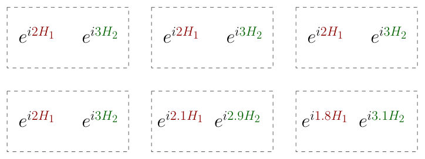
<figcaption class="paper-figure-caption"><b>Fig 1.</b> FIG. 1. Top: Ordinary fixed-weight trotterization of the unitary U = exp[i(6H1 + 9H2)] using the pulses exp(i2H1) and exp(i3H2). The different steps are separated by the dashed rectangles; here the number of steps N is set to 3 for illustration purposes. Bottom: Variable-weight trotterization of the same target unitary, where the pulse weights are adjusted at later steps to suppress the accumulated error. While the fixed-weight trotterization solution converges to the target evolution with scaling O(N −1), our variable-weight schedule converges with scaling O(N −2).</figcaption>
</figure>
<figure class="paper-figure-card">

<figcaption class="paper-figure-caption"><b>Fig 2.</b> FIG. 2. A representation of the geometric intuition behind trotterization. The black dashed curve corresponds to the path γ(t) = exp(itH) in SU(d), starting at the identity when t = 0 and ending at γ(1) = U. The ideal integration curve (green), Sn = exp(inH/N), coincides with γ(n/N) and there- fore incurs no approximation error when n = N. On the other hand, a general trotterization scheme (red) uses actual steps T (n) and, at n = N, ends at distance ε (blue) from the target. Here N = 3 for illustration purposes.</figcaption>
</figure>
<figure class="paper-figure-card">
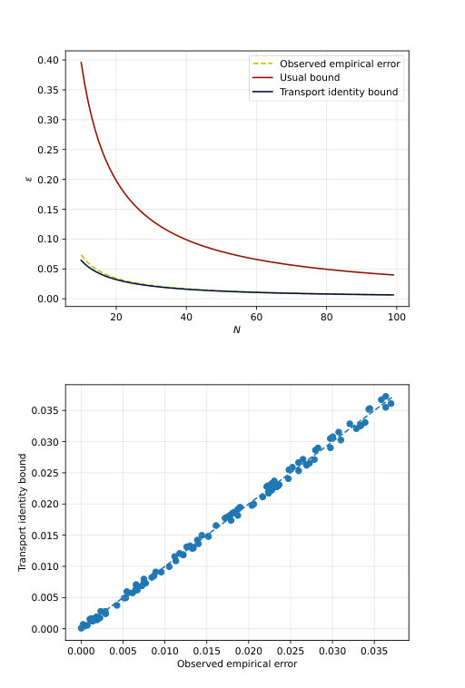
<figcaption class="paper-figure-caption"><b>Fig 3.</b> FIG. 3. Left: Estimated and observed errors according to dif- ferent trotterization bounds for different values of N. Here, a random SU(2) target is approximated with a fixed-weight trotterization solution, where H is assumed to be the set of three Pauli matrices and C = R3 (i.e., the solution is drift- free). Right: The error bound estimated according to equa- tion (14) as a function of the observed error, for 100 randomly sampled SU(2) targets, with N held fixed at 50. The dashed line has slope +1.</figcaption>
</figure>
<figure class="paper-figure-card">

<figcaption class="paper-figure-caption"><b>Fig 4.</b> FIG. 4. Log-log plot of the observed trotterization error using the fixed- and scheduled-weight solutions. The fitted expo- nents (p), together with reference curves proportional to N −1</figcaption>
</figure>
<figure class="paper-figure-card">
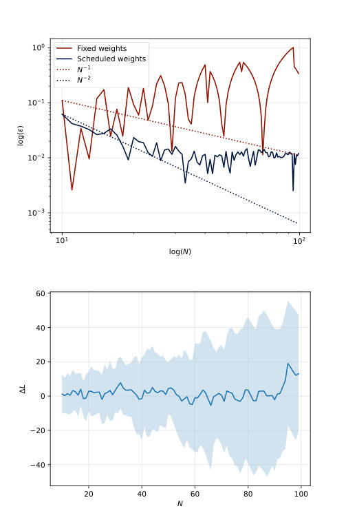
<figcaption class="paper-figure-caption"><b>Fig 5.</b> FIG. 5. Left: Log-log plot of the observed trotterization error using the fixed- and scheduled-weight solutions for C = Z3, where H was taken to be small multiples of the three Pauli matrices and the target is a random SU(2) unitary. Refer- ence curves proportional to N −1 and N −2 are also shown. Right: The difference ∆L between the number of gates in the scheduled- and fixed-weight solutions for trotterization- based gate synthesis. Statistics were taken over 30 randomly generated SU(2) targets, and the filled region corresponds to one standard deviation around the average.</figcaption>
</figure>
</div>

<p><strong>Summary.</strong> This paper introduces 'scheduled trotterization,' a variable-weight modification to standard quantum simulation algorithms. It rigorously proves that by adaptively scheduling the local pulse weights, the global error in approximating time evolution can be improved from $O(N^{-1})$ to $O(N^{-2})$. This offers a powerful theoretical tool for designing more accurate quantum simulation protocols.</p>
<p><strong>Why it may be interesting.</strong> This work provides a rigorous, mathematically advanced framework for optimizing quantum simulation algorithms, directly impacting the achievable accuracy in simulating complex quantum dynamics.</p>
<details>
<summary>Detailed structure</summary>
<p><strong>Main problem.</strong> The paper addresses the challenge of accurately simulating quantum time evolution using product formulas (Trotterization) when the available local generators are limited.</p>
<p><strong>Main result.</strong> By introducing a variable-weight, scheduled trotterization scheme, the global approximation error can be significantly reduced from the standard $O(N^{-1})$ scaling to $O(N^{-2})$ for exact synthesis.</p>
<p><strong>Method.</strong> The analysis uses the geometry of the Lie group, expressing the global error as a product of transported local defects analyzed via the Baker-Campbell-Hausdorff formula.</p>
<p><strong>Model / system.</strong> The model involves approximating a target unitary evolution $U = \exp(itH)$ using a sequence of local pulses generated by a finite set of available Hamiltonians $\{H_j\}$ in $SU(d)$.</p>
<p><strong>Key observables.</strong> Global endpoint error ($\|U - W\|$); local defects; internal and external remainder terms ($R_{	ext{int}}, R_{	ext{ext}}$).</p>
<p><strong>Important parameters / regimes.</strong> Number of steps ($N$); error scaling ($\delta, \epsilon$); local covering parameter (for imperfect synthesis).</p>
<p><strong>Assumptions / limitations.</strong> The analysis relies on the validity of BCH expansions under small norm conditions and assumes the target Hamiltonian lies in the real span of the available generators.</p>
<p><strong>Figures summary.</strong> Figure 1 compares fixed-weight ($O(N^{-1})$) vs. variable-weight ($O(N^{-2})$) scaling. Figure 2 illustrates the geometric path difference between ideal and simulated evolution.</p>
<p><strong>Paper structure.</strong> The paper develops the error analysis inductively, first establishing the general error bound using BCH expansions, then deriving the improved $O(N^{-2})$ bound for exact synthesis by defining an adaptive schedule, and finally extending the framework to imperfect synthesis.</p>
</details>
<details>
<summary>Abstract</summary>
<p>Trotterization is a widely used algorithm for simulating quantum evolutions and consists of approximating a target unitary through a local linear decomposition of its generator that is repeated over $N$ steps. We introduce {scheduled trotterization}, a variable-weight modification in which the coefficients of the local linear decomposition are allowed to change from step to step. Using the geometry of the Lie group of unitary operators, we express the global endpoint error as a product of transported local defects, whose leading terms are obtained by two applications of the Baker-Campbell-Hausdorff formula, one inside each local step and one between different transported defects, separating the internal Trotter error from the external accumulation error. While we recover recent tighter bounds on the global approximation error when the weights are held fixed, the new framework allows us to propose a weight-varying schedule that significantly decreases the global error. For exact infinitesimal synthesis, we prove that this improves the usual fixed-weight $O(N^{-1})$ behavior to $O(N^{-2})$, without changing the basic pulse skeleton. We also extend the framework to imperfect infinitesimal synthesis, as arises in quantum gate synthesis problems, where admissible coefficients may only approximate the desired local corrections. In this case, the error is controlled by a local covering parameter measuring the quality of the available coefficient set. Numerical experiments for random $\SU(2)$ targets further support the predicted theoretical improvements. The results suggest a novel perspective for the analysis of Trotter errors, which can be treated as schedulable quantities to be coherently canceled at the endpoint.</p>
</details>
<p><sub><a href="#top">↑ back to top</a></sub></p>

<p><a id="paper-2610.18814"></a></p>
<h3 id="towards-synergy-between-theory-and-experiments-first-passage-processes-under-resetting-with-stochastic-return-protocols"><a href="http://arxiv.org/abs/2610.18814v1">Towards synergy between theory and experiments: First-passage processes under resetting with stochastic return protocols</a></h3>
<p><strong>Authors:</strong> Ashutosh Dubey, Arnab Pal<br>
<strong>Type:</strong> theory · <strong>Category:</strong> statistical mechanics · <strong>PDF:</strong> <a href="https://arxiv.org/pdf/2610.18814v1">https://arxiv.org/pdf/2610.18814v1</a><br>
<strong>Analysis basis:</strong> full PDF text, analyzed in chunks
<strong>Topic relevance:</strong> <code>quantum measurements</code> <strong>1/5</strong></p>
<div class="figure-strip-hint">↔ Scroll figures horizontally</div>
<div class="paper-figures-scroll">
<figure class="paper-figure-card">

<figcaption class="paper-figure-caption"><b>Fig 1.</b> FIG. 1. Schematic illustration of a search process with stochastic resetting with SR facilitated</figcaption>
</figure>
<figure class="paper-figure-card">
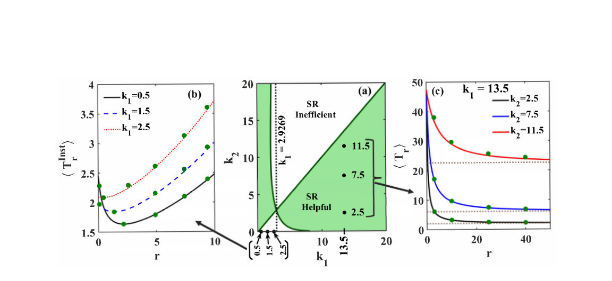
<figcaption class="paper-figure-caption"><b>Fig 2.</b> FIG. 2. The center figure (a) Phase-space diagram in the (k1, k2) plane showing the regions where</figcaption>
</figure>
<figure class="paper-figure-card">
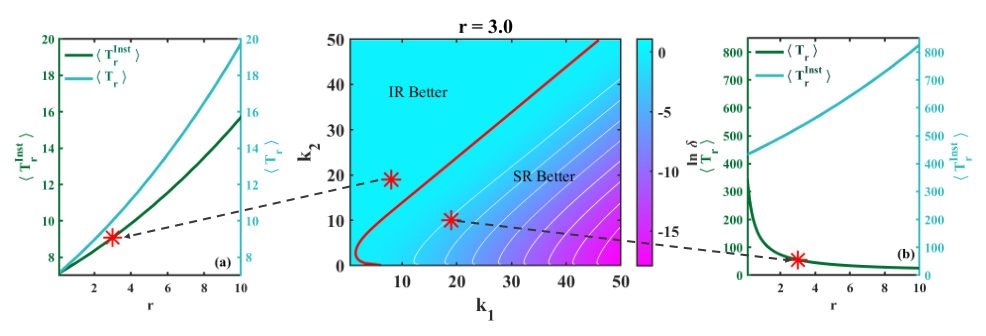
<figcaption class="paper-figure-caption"><b>Fig 3.</b> FIG. 3. The central figure shows the (k1, k2) phase diagram for r = 3, highlighting the regime where</figcaption>
</figure>
<figure class="paper-figure-card">
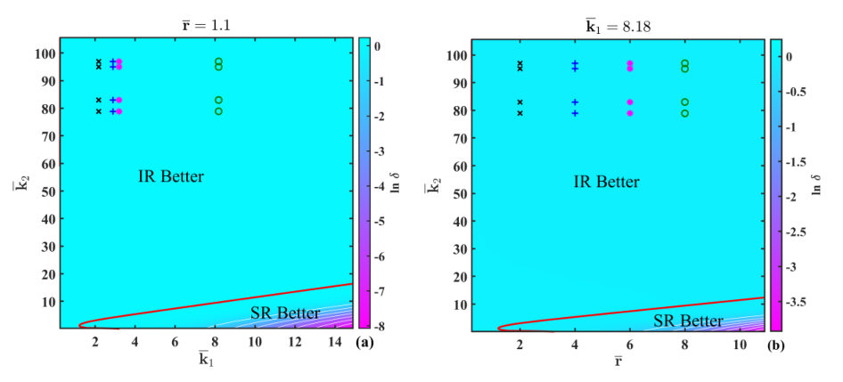
<figcaption class="paper-figure-caption"><b>Fig 4.</b> FIG. 4. (a) (k1, k2) phase space for fixed r = 1.1 and (b) (r, k2) phase space for fixed k1 = 8.18.</figcaption>
</figure>
<figure class="paper-figure-card">
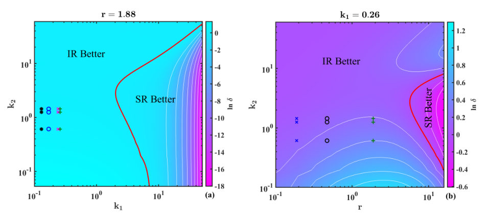
<figcaption class="paper-figure-caption"><b>Fig 5.</b> FIG. 5. (a) (k1, k2) phase space for fixed r = 1.88 and (b) (r, k2) phase space for fixed k1 = 0.26.</figcaption>
</figure>
</div>

<p><strong>Summary.</strong> This paper analyzes search processes in a 1D harmonic trap subjected to stochastic resetting with a finite-time return phase. By deriving the MFPT and using the CV criterion, the authors map out the parameter space where this stochastic return mechanism significantly enhances search efficiency over simpler instantaneous return models. The results offer concrete, experimentally testable guidelines for optimizing search protocols.</p>
<p><strong>Why it may be interesting.</strong> The analysis of non-Markovian or finite-time return dynamics (stochastic return) provides a crucial refinement to standard resetting models, directly bridging theoretical predictions to measurable optical trap experiments.</p>
<details>
<summary>Detailed structure</summary>
<p><strong>Main problem.</strong> The paper investigates first-passage processes under stochastic resetting with stochastic return (SR) protocols to understand how this mechanism controls search efficiency compared to instantaneous return (IR).</p>
<p><strong>Main result.</strong> The most beneficial regime for SR occurs when the potential strength in the search phase ($k_1$) is large and the potential strength in the return phase ($k_2$) is small. The work provides experimentally testable predictions.</p>
<p><strong>Method.</strong> The authors analytically derive the Mean First-Passage Time (MFPT) and utilize the coefficient-of-variation (CV) criterion to construct phase diagrams comparing SR efficiency against the underlying dynamics.</p>
<p><strong>Model / system.</strong> The model considers a one-dimensional diffusing particle confined in a harmonic trap, undergoing a search phase (stiffness $k_1$) followed by a return phase (stiffness $k_2$) after stochastic resetting.</p>
<p><strong>Key observables.</strong> Mean First-Passage Time (MFPT), Search efficiency enhancement/suppression (via CV criterion), Comparison between SR and IR efficiency.</p>
<p><strong>Important parameters / regimes.</strong> Potential stiffnesses ($k_1, k_2$), resetting rate ($r$), and the target location ($L$).</p>
<p><strong>Assumptions / limitations.</strong> The dynamics are modeled using an overdamped Langevin process (Ornstein–Uhlenbeck process) in both phases, and the return phase allows for target detection.</p>
<p><strong>Figures summary.</strong> Figure 1 schematically illustrates three search scenarios: direct success, target detection during return, or return to origin followed by a new search. Figure 2 shows a phase-space diagram mapping parameter regimes where SR is beneficial.</p>
<p><strong>Paper structure.</strong> The paper establishes the theoretical framework for SR dynamics, derives the MFPT, applies the CV criterion to map the parameter space, and finally tests these theoretical predictions against parameters reported in existing experimental studies.</p>
</details>
<details>
<summary>Abstract</summary>
<p>Stochastic resetting with stochastic return (SR) has recently emerged as an effective and practically relevant strategy for controlling first-passage phenomena and optimizing search processes by significantly reducing completion times in a wide class of stochastic systems. While most theoretical studies assume instantaneous return (IR), in realistic systems the return to the resetting position typically occurs over a finite time. We consider a 1-d diffusing particle in a harmonic trap with stiffnesses $k_1$ and $k_2$ during search and return, respectively. The particle searches for the target and, upon resetting at rate $r$, enters the return phase, continuing until it reaches either the origin or the absorbing target at $L>0$. Notably, the model permits target detection throughout the return phase, distinguishing it from IR scenarios. We analytically derive the MFPT for our model and determine parameter regions where SR enhances or suppresses search efficiency over the underlying dynamics, constructing the corresponding phase diagram using the coefficient of variation criterion. We further identify regimes in which SR is more efficient than IR using the SR criterion. This behavior is tested across different parameter sets taken from experimental studies by Goerlich et al., Biroli et al., and Besga et al. We map the parameter values reported in existing experimental studies onto our theoretical phase diagram, thereby identifying the regimes in which SR outperforms IR. In particular, we find that the most relevant region of the phase space, where SR is most beneficial corresponds to larger values of the potential strength in the search phase and lower values of potential in the return phase. Our results provide experimentally testable predictions and bridge the gap between theoretical resetting models and optical trap mediated finite-time return dynamics.</p>
</details>
<p><sub><a href="#top">↑ back to top</a></sub></p>
<h2 id="other-papers-25">Other papers (25)</h2>
<p><em>Papers from primary archives without highlighted authors or any topic match. Click to expand.</em></p>
<details>
<summary>Show other papers</summary>

<p><a id="paper-2610.18799"></a></p>
<h3 id="math692math"><a href="http://arxiv.org/abs/2610.18799v1">$\mathsf{EFI}\Leftrightarrow\mathsf{1PRS}$</a></h3>
<p><strong>Authors:</strong> Rishabh Batra<br>
<strong>Type:</strong> theory · <strong>Category:</strong> quantum information and computing · <strong>PDF:</strong> <a href="https://arxiv.org/pdf/2610.18799v1">https://arxiv.org/pdf/2610.18799v1</a><br>
<strong>Analysis basis:</strong> full PDF text, analyzed in chunks</p>
<div class="figure-strip-hint">↔ Scroll figures horizontally</div>
<div class="paper-figures-scroll">
<figure class="paper-figure-card">

<figcaption class="paper-figure-caption"><b>Fig 1.</b> Figure 1: Equivalences at the bottom of Microcrypt.</figcaption>
</figure>
</div>
<p><strong>Summary.</strong> This paper proves a fundamental equivalence in quantum cryptography, showing that EFI pairs are mathematically equivalent to expanding single-copy pseudorandom state generators (1PRS). By removing non-uniformity from previous work, the authors provide the first uniform characterization of this relationship. This result establishes a deep quantum analogue to classical cryptographic theorems linking one-way functions and pseudorandomness.</p>
<p><strong>Why it may be interesting.</strong> While highly abstract, the rigorous mathematical tools developed for bounding quantum entropy and proving computational indistinguishability are foundational to understanding the limits of quantum information processing.</p>
<details>
<summary>Detailed structure</summary>
<p><strong>Main problem.</strong> To prove the uniform equivalence between Efficiently Formed Information (EFI) pairs and expanding single-copy pseudorandom state generators (1PRS).</p>
<p><strong>Main result.</strong> The authors establish the first uniform meta-complexity characterization showing that EFI pairs exist if and only if expanding 1PRS exist, providing a quantum analogue to classical cryptographic equivalences.</p>
<p><strong>Method.</strong> The proof adapts the random-start technique and uses entropy chain rules to remove non-uniformity from prior constructions, relating the existence of quantum states to computational hardness assumptions.</p>
<p><strong>Model / system.</strong> The analysis is conducted using quantum states (pure states) within the framework of quantum cryptography primitives like EFI pairs and 1PRS.</p>
<p><strong>Key observables.</strong> Von Neumann entropy, algorithmic entropy, trace distance, and the entropy surplus.</p>
<p><strong>Important parameters / regimes.</strong> Security parameter $\lambda$, output/key lengths ($n, r$), and the stretch factor.</p>
<p><strong>Assumptions / limitations.</strong> The proof builds upon prior results regarding non-uniform equivalence and relies on the random-start idea holding for quantum side information.</p>
<p><strong>Figures summary.</strong> Figure 1 illustrates the equivalence relationships between EFI, statistically verifiable one-way state generators (svOWSG), quantum commitments, and 1PRS.</p>
<p><strong>Paper structure.</strong> The paper progresses by first establishing the equivalence ($  ext{EFI} \Leftrightarrow    ext{1PRS}$) using advanced entropy analysis, culminating in a theorem that provides the uniform meta-complexity characterization.</p>
</details>
<details>
<summary>Abstract</summary>
<p>A series of recent works has established EFI pairs as the "minimal" assumption for quantum cryptography. Recently, Cavalar et al. [CCC+26] showed that EFI pairs are equivalent to non-uniform expanding single-copy pseudorandom state generators (1PRS), and obtained a non-uniform meta-complexity characterization of EFI pairs. We remove the non-uniformity in their construction and prove that EFI pairs are equivalent to expanding 1PRS. As a corollary, we obtain the first uniform meta-complexity characterization of EFI pairs. Together with the equivalence of statistically verifiable one-way state generators and commitments proved by Batra and Jain [BJ24], this gives a quantum analogue of the classical equivalence between one-way functions, commitments, and pseudorandom generators.</p>
</details>
<p><sub><a href="#top">↑ back to top</a></sub></p>

<p><a id="paper-2610.18589"></a></p>
<h3 id="math695math-efficient-unitary-synthesis-via-block-sparse-hamiltonian-simulation"><a href="http://arxiv.org/abs/2610.18589v1">$T$-efficient unitary synthesis via block-sparse Hamiltonian simulation</a></h3>
<p><strong>Authors:</strong> Diyi Liu, Shuchen Zhu, Wibe Albert de Jong, Di Fang, David Williams-Young, Chao Yang<br>
<strong>Type:</strong> theory · <strong>Category:</strong> quantum information and computing · <strong>PDF:</strong> <a href="https://arxiv.org/pdf/2610.18589v1">https://arxiv.org/pdf/2610.18589v1</a><br>
<strong>Analysis basis:</strong> full PDF text, analyzed in chunks</p>
<div class="figure-strip-hint">↔ Scroll figures horizontally</div>
<div class="paper-figures-scroll">
<figure class="paper-figure-card">
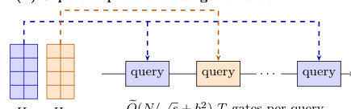
<figcaption class="paper-figure-caption"><b>Fig 1.</b> FIG. 2. Schematic table access at fixed precision. Boxes in (a) denote queries to the dense block encoding of the target matrix in Yuan et al. [9]. Boxes in (b) denote queries to the block encodings UHk of our s pieces, illustrated with two piece tables. Each table has O(D2/s) block slots in the parameter range used in the construction. Dashed arrows link queries to their tables. The query counts are totals over the respective circuits.</figcaption>
</figure>
<figure class="paper-figure-card">

<figcaption class="paper-figure-caption"><b>Fig 2.</b> FIG. 3. One possible assignment with D = 4 and s = 2. Colored cells are nonzero b × b blocks; blank cells are zero. Each block and its conjugate-transpose partner are assigned to the same piece, indicated by their shared color. The out- lined blocks show one such pair. Thus H′ = H1 + H2 with Hermitian pieces.</figcaption>
</figure>
<figure class="paper-figure-card">
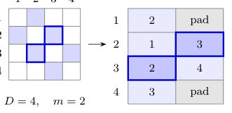
<figcaption class="paper-figure-caption"><b>Fig 3.</b> FIG. 4. Lookup table for the blue piece H1 in Fig. 3. Table rows correspond to block columns J, and table columns to slots u = 1, 2. Numbers give block row indices I, while gray cells represent zero padding. The outlined blocks (H1)3,2 and (H1)2,3 are adjoints, with paired addresses (2, 2) and (3, 1), respectively.</figcaption>
</figure>
<figure class="paper-figure-card">

<figcaption class="paper-figure-caption"><b>Fig 4.</b> FIG. 5. Building UH1 from the lookup table in Fig. 4 and the matrix entries. The solid outlines trace address (J, u) = (2, 2): its entry I = 3 selects a unitary with encoded block (H1)3,2/g. Each selected unitary is constructed from the corresponding matrix block and g during classical preprocessing. select applies that unitary for the corresponding address. The permutation Π changes the block label from input J = 2 to output I = 3 and the slot from u = 2 to u′ = 1. This branch therefore contributes to block (3, 2) of the encoded matrix.</figcaption>
</figure>
<figure class="paper-figure-card">

<figcaption class="paper-figure-caption"><b>Fig 5.</b> FIG. 6. Block encoding UK of a Hermitian piece K with b × b blocks. For K = H1, this circuit implements the con- struction in Fig. 5. The data registers are B, holding the input block column J, and T, holding the position xl within a block. The encoding ancillas are S, holding one of m padded slots per column, and the single flag qubit F. The Hadamard layer FS = H⊗log2 m prepares and unprepares the uniform slot state. For each nonpadding address (J, u) identifying row I, select applies a unitary on F, T whose F = 0 block is KIJ/g, where g bounds all block operator norms. Padding encodes zero. The permutation Π exchanges addresses (J, u) and (I, u′) of adjoint blocks on S, B. The block with...</figcaption>
</figure>
</div>
<p><strong>Summary.</strong> This paper presents a novel construction for synthesizing arbitrary $n$-qubit unitaries using Clifford+T circuits, achieving a T-gate complexity of $\widetilde{O}(N^{8/7}L^{3/7}+NL)$. The authors improve upon previous bounds and rigorously prove that the $N^{8/7}$ scaling is optimal within the sequential block-SELECT model, advancing the theoretical understanding of quantum circuit resource requirements.</p>
<p><strong>Why it may be interesting.</strong> This work directly addresses the fundamental resource cost of quantum computation, providing state-of-the-art bounds on gate synthesis complexity, which is crucial for designing practical quantum algorithms.</p>
<details>
<summary>Detailed structure</summary>
<p><strong>Main problem.</strong> Determining the minimum number of T gates required to implement an arbitrary n-qubit unitary circuit efficiently.</p>
<p><strong>Main result.</strong> The authors achieve a T-gate count of $\widetilde{O}(N^{8/7}L^{3/7}+NL)$ and prove that the exponent $8/7$ is optimal in the worst case for the sequential block-SELECT model.</p>
<p><strong>Method.</strong> The approach simulates the target unitary via its Hermitian logarithm, flattening the generator using random similarity transformations, and combining the resulting block-sparse evolutions using the qDRIFT technique.</p>
<p><strong>Model / system.</strong> The model is quantum computation using Clifford+T circuits to realize arbitrary $n$-qubit unitaries $U \in U(2n)$. The resource measure is the T-gate count, as T-gates are non-Clifford and costly.</p>
<p><strong>Key observables.</strong> T-gate count, clean ancilla count, and the approximation error $\epsilon$.</p>
<p><strong>Important parameters / regimes.</strong> N (total qubits, $2^n$), L ($\log_2(N/\epsilon)$), and the exponent $8/7$.</p>
<p><strong>Assumptions / limitations.</strong> The analysis assumes the use of clean ancillas, and the lower bound proof is restricted to the sequential block-SELECT model.</p>
<p><strong>Figures summary.</strong> Figure 1 illustrates matrix partitioning for $N=8$. Figure 2 compares schematic table access for dense vs. separate piece encodings. Figure 3 and 4 show the assignment and structure of blocks for Hamiltonian simulation.</p>
<p><strong>Paper structure.</strong> The paper develops the construction by first establishing the simulation framework (using qDRIFT and block encoding) and then deriving the optimal complexity bounds by analyzing the required resources in the sequential block-SELECT model.</p>
</details>
<details>
<summary>Abstract</summary>
<p>We construct Clifford+$T$ circuits implementing arbitrary $n$-qubit unitaries with worst-case $T$-count $\widetilde{O}(N^{8/7})$ at constant operator-norm error, where $N=2^n$, improving the previous exponent $5/4$. The construction uses $\widetilde{O}(N^{6/7})$ clean ancillas. The main idea is to reduce the data addressed by each query to the block-encoding circuit for a sparse piece while controlling the additional simulation work needed to combine the pieces. We simulate a Hermitian logarithm of the target by flattening its traceless part with a two-layer random similarity transformation, randomly partitioning the transformed generator into block-sparse Hermitian pieces, and combining their evolutions using qDRIFT. For a target operator-norm error $ε\in(0,1/2)$, let $L=\log_2(N/ε)$, the qubit count plus the requested bits of accuracy. By successively correcting the approximation error, we obtain a circuit using $\widetilde{O}(N^{8/7}L^{3/7}+NL)$ $T$ gates and $\widetilde{O}(N)$ clean ancillas whenever $L\le N$. We also prove that, at constant precision, the exponent $8/7$ is optimal within a sequential block-SELECT model.</p>
</details>
<p><sub><a href="#top">↑ back to top</a></sub></p>

<p><a id="paper-2610.17395"></a></p>
<h3 id="a-controlled-null-result-for-per-gate-riemannian-optimization-in-vqe"><a href="http://arxiv.org/abs/2610.17395v1">A Controlled Null Result for Per-Gate Riemannian Optimization in VQE</a></h3>
<p><strong>Authors:</strong> Polina Belozerova, Pavel Osinenko<br>
<strong>Type:</strong> theory · <strong>Category:</strong> quantum information and computing · <strong>PDF:</strong> <a href="https://arxiv.org/pdf/2610.17395v1">https://arxiv.org/pdf/2610.17395v1</a><br>
<strong>Analysis basis:</strong> full PDF text, analyzed in chunks</p>
<div class="figure-strip-hint">↔ Scroll figures horizontally</div>
<div class="paper-figures-scroll">
<figure class="paper-figure-card">
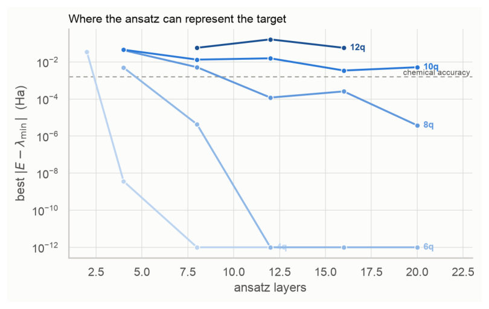
<figcaption class="paper-figure-caption"><b>Fig 1.</b> FIGURE 1. Depth calibration used before ranking optimizers. Operating points are chosen near the shallowest depths that can reach chemical accuracy; cells that no tested method can solve are not used as evidence for optimizer superiority.</figcaption>
</figure>
<figure class="paper-figure-card">
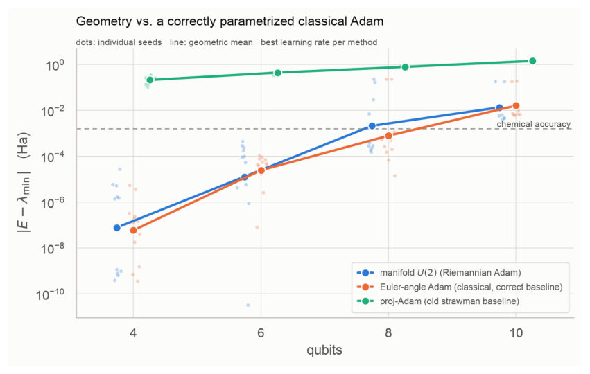
<figcaption class="paper-figure-caption"><b>Fig 2.</b> FIGURE 2. Matched Euler-coordinate Adam versus direct per-gate manifold Adam. Dots denote individual seeds and lines denote the geometric mean at the best learning rate per method. The two valid methods are interleaved; projected matrix Adam sits far above both.</figcaption>
</figure>
<figure class="paper-figure-card">
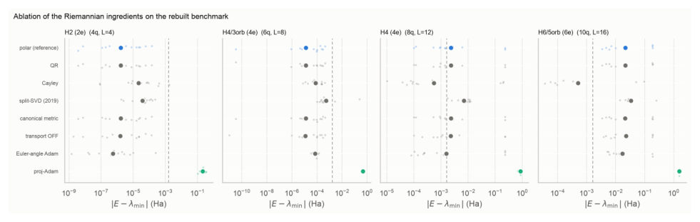
<figcaption class="paper-figure-caption"><b>Fig 3.</b> FIGURE 3. Ingredient and failure-mode ablations. The safe geometric choices do not separate in the resolved cells; apparent large effects arise from invalid baselines, unsafe retractions, or insufficient learning-rate grids.</figcaption>
</figure>
</div>
<p><strong>Summary.</strong> This paper investigates whether using Riemannian geometry to optimize individual gates in VQE circuits improves performance over standard optimization methods. Through rigorous testing on a hydrogen-chain benchmark, the authors report a controlled null result, finding no practical advantage. The main contribution is establishing a detailed validation checklist to guide future, more reliable comparisons of quantum optimizers.</p>
<p><strong>Why it may be interesting.</strong> It provides a crucial, highly technical benchmark and validation checklist for the entire field of quantum machine learning optimization, helping researchers avoid misleading positive results.</p>
<details>
<summary>Detailed structure</summary>
<p><strong>Main problem.</strong> To rigorously test whether optimizing variational quantum circuits using per-gate Riemannian optimization offers a practical advantage over standard classical optimizers like Adam.</p>
<p><strong>Main result.</strong> The study concludes a controlled null result, finding no measurable practical advantage for Riemannian optimization over a matched Euler-angle Adam baseline on a validated hydrogen-chain benchmark.</p>
<p><strong>Method.</strong> The authors compare Riemannian optimization techniques (using various retractions and metrics) against a classical Adam baseline applied to the same physical gates, using a rigorous validation protocol.</p>
<p><strong>Model / system.</strong> The model is the Variational Quantum Eigensolver (VQE) applied to neutral hydrogen chains. The ansatz involves trainable single-qubit U(2) gates followed by a fixed CNOT entangler.</p>
<p><strong>Key observables.</strong> Geometric mean best energy error (|E - \lambda_min|) and success rate at chemical accuracy (1.6 x 10^-3 Ha). Diagnostics include Schmidt rank and half-chain entropy.</p>
<p><strong>Important parameters / regimes.</strong> The comparison is restricted to the clean per-gate U(2) setting, excluding noisy hardware or large-block compilation.</p>
<p><strong>Assumptions / limitations.</strong> The primary limitation is the scope: the result is only valid for the specific per-gate U(2) regime tested, and the paper provides a checklist for future comparisons.</p>
<p><strong>Figures summary.</strong> Figures compare the performance of Euler-coordinate Adam versus direct per-gate manifold Adam, while tables summarize performance metrics and list four identified failure modes that can create false positives.</p>
<p><strong>Paper structure.</strong> The paper establishes the problem, details the Riemannian optimization methods and baselines, presents results on the hydrogen-chain benchmark showing no advantage, and concludes by detailing four failure modes and proposing a validation checklist for future work.</p>
</details>
<details>
<summary>Abstract</summary>
<p>Parametrized gates in a variational quantum eigensolver (VQE) live on a product of unitary groups, which makes Riemannian optimization a natural candidate for improving training. We test this candidate in the clean per-gate setting: each single-qubit gate is optimized directly on U (2) and compared with Adam on an unconstrained Euler-angle chart representing the same physical gate, initialized from the same unitaries and tuned with a separate learning-rate sweep. On a validated hydrogen-chain benchmark, we find no measurable practical advantage from the Riemannian machinery. The direct manifold optimizer and the Euler-coordinate baseline are interleaved in final error and success rate; the classical coordinate baseline is not slower in iterations on the successful cells; and the choices of Riemannian metric, retraction, and momentum vector transport do not change the conclusion. We also identify four failure modes that can manufacture an apparent positive result: a trivial product-state benchmark, a projected-matrix Adam baseline that discards most of its own step, a non-unitary inherited Cayley retraction that lets the reported energy pass below the variational minimum, and a learning-rate grid whose optimum sits at its boundary. Each failure mode produced a plausible multi-seed result in our own workflow before being caught. The practical output of this paper is therefore a controlled null result and a validation checklist for VQE optimizer comparisons.</p>
</details>
<p><sub><a href="#top">↑ back to top</a></sub></p>

<p><a id="paper-2610.17500"></a></p>
<h3 id="a-three-eighths-upper-bound-on-the-stabilizer-rank-exponent-of-face-center-magic-states"><a href="http://arxiv.org/abs/2610.17500v1">A three-eighths upper bound on the stabilizer-rank exponent of face-center magic states</a></h3>
<p><strong>Authors:</strong> Samuel Bevins<br>
<strong>Type:</strong> theory · <strong>Category:</strong> quantum information and computing · <strong>PDF:</strong> <a href="https://arxiv.org/pdf/2610.17500v1">https://arxiv.org/pdf/2610.17500v1</a><br>
<strong>Analysis basis:</strong> full PDF text, analyzed in chunks</p>
<div class="figure-strip-hint">↔ Scroll figures horizontally</div>
<div class="paper-figures-scroll">
<figure class="paper-figure-card">
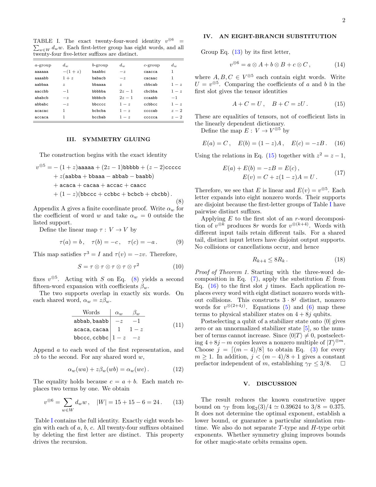
<figcaption class="paper-figure-caption"><b>Fig 1.</b> Low-resolution page preview, page 2</figcaption>
</figure>
<figure class="paper-figure-card">
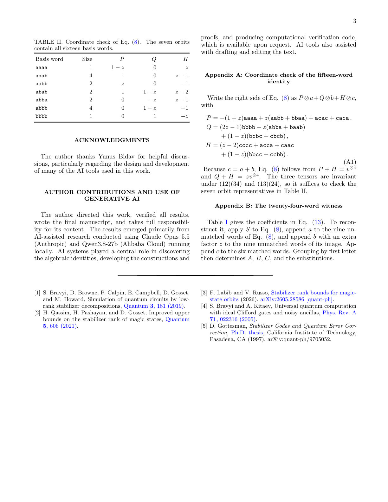
<figcaption class="paper-figure-caption"><b>Fig 2.</b> Low-resolution page preview, page 3</figcaption>
</figure>
</div>
<p><strong>Summary.</strong> This paper derives a new, improved upper bound ($3/8$) for the stabilizer-rank exponent associated with magic states. The authors achieve this by developing a sophisticated construction that combines existing stabilizer identities recursively. This tighter bound provides a more precise measure of the resource cost for simulating quantum circuits involving these specific quantum states.</p>
<p><strong>Why it may be interesting.</strong> This work directly impacts the understanding of resource quantification for quantum simulation, which is crucial for designing efficient quantum algorithms and understanding the limits of classical simulation.</p>
<details>
<summary>Detailed structure</summary>
<p><strong>Main problem.</strong> The paper aims to determine a tighter upper bound on the stabilizer-rank exponent ($\gamma_T$) for magic states, which governs the resource cost for simulating quantum circuits.</p>
<p><strong>Main result.</strong> The authors establish a new upper bound of $\gamma_T \le 3/8$ for the exponent, improving upon the previous bound of $\log_2(3)/4$.</p>
<p><strong>Method.</strong> The improvement is achieved through an explicit construction involving symmetry gluing and a recursive substitution method applied to the stabilizer identities.</p>
<p><strong>Model / system.</strong> The study focuses on the tensor product of qubit face-center magic states, $|	ext{T}
angle^{\otimes m}$, and their associated stabilizer rank.</p>
<p><strong>Key observables.</strong> The exact complex stabilizer rank $\chi(|\psi
angle)$ and the stabilizer-rank exponent $\gamma_T$.</p>
<p><strong>Important parameters / regimes.</strong> The exponent $\gamma_T$, which is compared against the previously known value $\log_2(3)/4$.</p>
<p><strong>Assumptions / limitations.</strong> The result is an upper bound and does not determine the optimal exponent or establish a lower bound.</p>
<p><strong>Figures summary.</strong> Table I shows the exact twenty-four-word identity for $v^{\otimes 6}$, and Table II provides a coordinate check for the seven orbits.</p>
<p><strong>Paper structure.</strong> The argument progresses by using a three-word identity for $v^{\otimes 2}$ and iteratively applying a linear map $E$ to generate the bound for $v^{\otimes (2+4j)}$, building upon symmetry gluing techniques.</p>
</details>
<details>
<summary>Abstract</summary>
<p>We give an explicit construction proving that the exact stabilizer rank of $m$ copies of the qubit face-center magic state is $O(2^{3m/8})$. Two symmetry-related fifteen-term identities combine into a twenty-four-term decomposition at twelve copies. The balanced structure of this decomposition yields a substitution that adds eight copies at a cost of eight terms per existing term. The resulting bound $γ_T \leq 3/8$ improves the previously published exponent $\log_2(3)/4$.</p>
</details>
<p><sub><a href="#top">↑ back to top</a></sub></p>

<p><a id="paper-2610.17836"></a></p>
<h3 id="a-tutorial-on-quantum-amplitude-embedding-with-data-re-uploading"><a href="http://arxiv.org/abs/2610.17836v1">A Tutorial on Quantum Amplitude Embedding with Data Re-Uploading</a></h3>
<p><strong>Authors:</strong> Hyojun Ahn, Joongheon Kim<br>
<strong>Type:</strong> theory · <strong>Category:</strong> quantum information and computing · <strong>PDF:</strong> <a href="https://arxiv.org/pdf/2610.17836v1">https://arxiv.org/pdf/2610.17836v1</a><br>
<strong>Analysis basis:</strong> full PDF text, analyzed in chunks</p>
<div class="figure-strip-hint">↔ Scroll figures horizontally</div>
<div class="paper-figures-scroll">
<figure class="paper-figure-card">
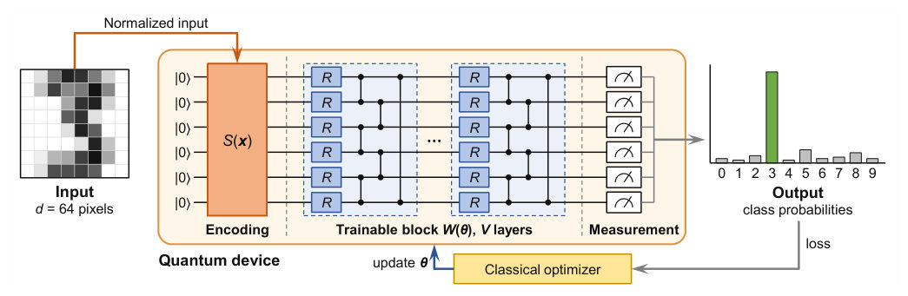
<figcaption class="paper-figure-caption"><b>Fig 1.</b> Fig. 1. Amplitude-embedded variational quantum model with one upload. S(x) writes the normalized image into six qubits, and an optimizer trains θ.</figcaption>
</figure>
<figure class="paper-figure-card">
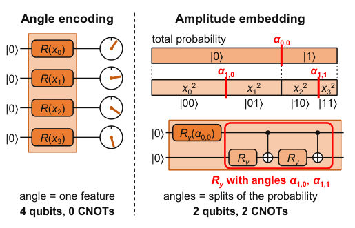
<figcaption class="paper-figure-caption"><b>Fig 2.</b> Fig. 2. One upload of four features. Both encodings use rotations whose angles depend on the data. Angle encoding turns one qubit per feature, and each angle αk,c(x) of amplitude embedding splits the probability mass.</figcaption>
</figure>
<figure class="paper-figure-card">

<figcaption class="paper-figure-caption"><b>Fig 3.</b> Fig. 3. Re-uploading schemes for amplitude embedding. Orange blocks upload the input, and blue blocks are trainable.</figcaption>
</figure>
<figure class="paper-figure-card">
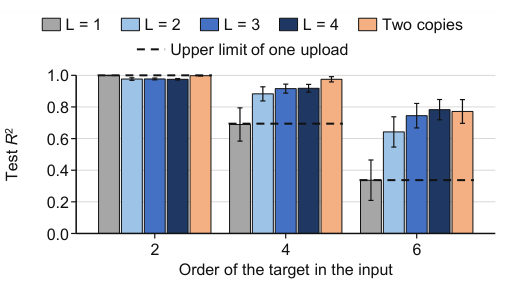
<figcaption class="paper-figure-caption"><b>Fig 4.</b> Fig. 5. Test R2 on synthetic targets of order 2, 4, and 6 (mean and standard deviation over ten seeds). The dashed line is the best quadratic form.</figcaption>
</figure>
<figure class="paper-figure-card">

<figcaption class="paper-figure-caption"><b>Fig 5.</b> Fig. 4. Training loss on the order-4 target (ten-seed mean).</figcaption>
</figure>
</div>
<p><strong>Summary.</strong> This tutorial analyzes how 'data re-uploading' enriches amplitude-embedded quantum models by repeatedly encoding classical input features. The work demonstrates that each upload increases the model's polynomial expressivity, allowing for better fitting of complex functions. Crucially, it advises practitioners on matching the number of uploads to the inherent polynomial order of the task to maximize performance while managing hardware error budgets.</p>
<p><strong>Why it may be interesting.</strong> While focused on quantum machine learning, the rigorous analysis of model expressivity and the quantification of resource trade-offs (capacity vs. gate error) provides general insights into designing complex quantum circuits.</p>
<details>
<summary>Detailed structure</summary>
<p><strong>Main problem.</strong> The paper aims to explain the functional gain provided by data re-uploading techniques within amplitude-embedded variational quantum models and to quantify this performance enhancement.</p>
<p><strong>Main result.</strong> Re-uploading increases the reachable polynomial order by two for each upload, leading to significant performance gains on high-order targets, although one upload is optimal for low-order tasks like quadratic fitting.</p>
<p><strong>Method.</strong> The authors analyze sequential and parallel re-uploading schemes by comparing the resulting polynomial expressivity and measuring performance using the test coefficient of determination on synthetic and image datasets.</p>
<p><strong>Model / system.</strong> The model is a variational quantum circuit utilizing amplitude embedding to process classical features. Re-uploading involves repeatedly encoding the input state between trainable blocks to increase model capacity.</p>
<p><strong>Key observables.</strong> Test coefficient of determination ($R^2$), reachable polynomial order, and the gate error rate the classifier can tolerate.</p>
<p><strong>Important parameters / regimes.</strong> The number of uploads (L or k), the polynomial order of the target function, and the two-qubit gate error rate ($\epsilon$).</p>
<p><strong>Assumptions / limitations.</strong> The analysis assumes a fixed budget of trainable parameters and that the gain from re-uploading must be known beforehand; the training itself is assumed noiseless for error analysis.</p>
<p><strong>Figures summary.</strong> Figures illustrate the circuit structure for re-uploading (sequential vs. parallel) and show performance gains ($R^2$) on targets of order 4 and 6, alongside how gate error tolerance decreases with more uploads.</p>
<p><strong>Paper structure.</strong> The paper first introduces amplitude embedding and the concept of re-uploading. It then theoretically analyzes how sequential and parallel re-uploading raise the polynomial order. Finally, it presents simulation results comparing performance gains and error tolerance across different upload counts.</p>
</details>
<details>
<summary>Abstract</summary>
<p>Amplitude embedding lets a variational quantum model read many classical features with few qubits, but the model output is then only a quadratic form in the normalized input. Data re-uploading, which encodes the input repeatedly between trainable blocks, can be used to enrich such a model. Because every additional upload of an amplitude embedding repeats a costly state preparation, the gain that an upload buys has to be known before the gates are spent. This tutorial thus addresses the problem of explaining what data re-uploading adds to an amplitude-embedded model and how large the gain is. We express sequential re-uploading and parallel re-uploading with two copies in one notation and show that each upload raises the reachable polynomial order by two. Under one trainable circuit family and one budget of trainable parameters, simulation results show that re-uploading raises the test coefficient of determination from 0.689 to between 0.883 and 0.975 on targets of order four and from 0.337 to between 0.642 and 0.783 on targets of order six, on all ten seeds. On a quadratic target and on handwritten digits, one upload remains the best choice, and every additional upload lowers the gate error that the classifier tolerates. These results help designers match the number of uploads to the polynomial order of the task at hand.</p>
</details>
<p><sub><a href="#top">↑ back to top</a></sub></p>

<p><a id="paper-2610.17520"></a></p>
<h3 id="chromatic-block-gibbs-p-bit-decoding-of-qldpc-codes"><a href="http://arxiv.org/abs/2610.17520v1">Chromatic Block-Gibbs p-Bit Decoding of QLDPC Codes</a></h3>
<p><strong>Authors:</strong> Mert Gökduman, Cyril Guyot, Henry D. Pfister<br>
<strong>Type:</strong> theory · <strong>Category:</strong> quantum information and computing · <strong>PDF:</strong> <a href="https://arxiv.org/pdf/2610.17520v1">https://arxiv.org/pdf/2610.17520v1</a><br>
<strong>Analysis basis:</strong> full PDF text, analyzed in chunks</p>
<div class="figure-strip-hint">↔ Scroll figures horizontally</div>
<div class="paper-figures-scroll">
<figure class="paper-figure-card">
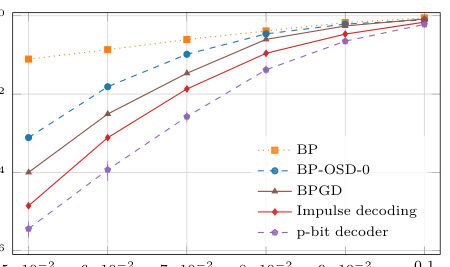
<figcaption class="paper-figure-caption"><b>Fig 1.</b> Fig. 1. Block failure rate versus bit-flip rate p for the B1 [[882, 24, 18 ≤ d ≤24]] code under code-capacity noise. The p-bit decoder (linear β : 0.175 →1.75, 256 replicas, up to 3000 sweeps per leg and 24 legs) is compared with BP, BP+OSD-0 [8], BPGD [18], and impulse decoding [24].</figcaption>
</figure>
<figure class="paper-figure-card">

<figcaption class="paper-figure-caption"><b>Fig 2.</b> Fig. 2. Logical error rate per logical qubit per syndrome round versus physical error rate for the [[72, 12, 6]], [[144, 12, 12]], and [[288, 12, 18]] bivariate-bicycle codes under uniform circuit-level noise. The p-bit decoder acts on the DEM obtained by retaining the X-error component, while the correlated p-bit decoder acts on the full undecomposed DEM. Reference curves: Cascade [38], Tesseract [39], Relay-BP [21], impulse decoding [24], and BP+OSD [8].</figcaption>
</figure>
</div>
<p><strong>Summary.</strong> This work introduces a novel decoding algorithm for QLDPC codes called constraint-annealed p-bit decoding. It uses stochastic sampling and parallel updates to efficiently search for error corrections. The method proves to be a competitive alternative to message-passing decoders for achieving fault tolerance in quantum computing.</p>
<p><strong>Why it may be interesting.</strong> The use of stochastic dynamics (p-bits) and annealing techniques to solve a hard constraint satisfaction problem (syndrome decoding) provides an interesting analogy to non-equilibrium statistical physics methods applied to quantum error correction.</p>
<details>
<summary>Detailed structure</summary>
<p><strong>Main problem.</strong> Developing an efficient and robust decoder for Quantum Low-Density Parity-Check (QLDPC) codes, which are essential for fault-tolerant quantum computation.</p>
<p><strong>Main result.</strong> The proposed constraint-annealed p-bit decoder achieves logical error rates competitive with leading decoders under both code-capacity and circuit-level noise models.</p>
<p><strong>Method.</strong> The decoder employs a stochastic search strategy using probabilistic bits (p-bits) and combines this with constraint annealing and parallel updates via graph coloring.</p>
<p><strong>Model / system.</strong> The system involves QLDPC codes defined by a parity-check matrix H, and the decoding process is modeled using tunable stochastic binary units (p-bits) to find error corrections.</p>
<p><strong>Key observables.</strong> Logical error rates, block failure rates, and the minimum Hamming weight of the found candidate.</p>
<p><strong>Important parameters / regimes.</strong> The annealing strength parameter (beta), the number of replicas (R), and the update budget (K).</p>
<p><strong>Assumptions / limitations.</strong> The comparison is made at explicitly stated update budgets, and the method relies on the assumption that stochastic sampling can efficiently explore the solution space.</p>
<p><strong>Figures summary.</strong> Figures compare block failure rates vs. bit-flip rate (code-capacity noise) and logical error rates vs. physical error rate (circuit noise) against established decoders.</p>
<p><strong>Paper structure.</strong> The paper introduces the p-bit framework, details the constraint-annealed Gibbs sampling process, and evaluates its performance against state-of-the-art decoders under various noise models.</p>
</details>
<details>
<summary>Abstract</summary>
<p>We introduce a parallel decoder for quantum low-density parity-check (QLDPC) codes based on probabilistic bits (p-bits), tunable stochastic binary units controlled by local fields. The idea is that predicted error configurations, interpreted as explanations of the observed syndrome, are updated stochastically using local Gibbs conditionals, while a progressively strengthened parity penalty drives the search toward syndrome-valid configurations. A coloring of the decoding graph enables parallel block updates, and independent replicas and restarts provide trajectory diversity. The best candidate encountered during the search is returned, mirroring the candidate-selection strategy of recent ensemble decoders. At the stated update budgets, the resulting logical error rates are on par with leading decoders under both code-capacity and circuit-level noise. While the total number of variable resamplings can be substantially larger than the message-update count of BP-based alternatives, the numerical results establish constraint-annealed p-bit dynamics as a competitive stochastic alternative for QLDPC decoding and motivate further study of hardware-native implementations.</p>
</details>
<p><sub><a href="#top">↑ back to top</a></sub></p>

<p><a id="paper-2610.17452"></a></p>
<h3 id="crystal-growth-magnetic-and-transport-properties-of-the-candidate-altermagnet-crmath742mathnbsmath743math"><a href="http://arxiv.org/abs/2610.17452v1">Crystal growth, magnetic, and transport properties of the candidate altermagnet Cr$_{1/4}$NbS$_{2}$</a></h3>
<p><strong>Authors:</strong> Nashra Pistawala, Martin R. Lees, Geetha Balakrishnan, Daniel A. Mayoh<br>
<strong>Type:</strong> experiment · <strong>Category:</strong> strongly correlated electrons · <strong>PDF:</strong> <a href="https://arxiv.org/pdf/2610.17452v1">https://arxiv.org/pdf/2610.17452v1</a><br>
<strong>Analysis basis:</strong> full PDF text, analyzed in chunks</p>
<div class="figure-strip-hint">↔ Scroll figures horizontally</div>
<div class="paper-figures-scroll">
<figure class="paper-figure-card">

<figcaption class="paper-figure-caption"><b>Fig 1.</b> FIG. 1. (a) Image of an as-grown single crystal of Cr1/4NbS2; each grid square corresponds to</figcaption>
</figure>
<figure class="paper-figure-card">

<figcaption class="paper-figure-caption"><b>Fig 2.</b> FIG. 2. Temperature dependence of the heat capacity of Cr1/4NbS2. The solid orange line is a fit to the</figcaption>
</figure>
<figure class="paper-figure-card">

<figcaption class="paper-figure-caption"><b>Fig 3.</b> FIG. 3. (a) Zero-field-cooled (ZFC) and field-cooled (FC) χ(T) measured under an applied field of µ0H =</figcaption>
</figure>
<figure class="paper-figure-card">
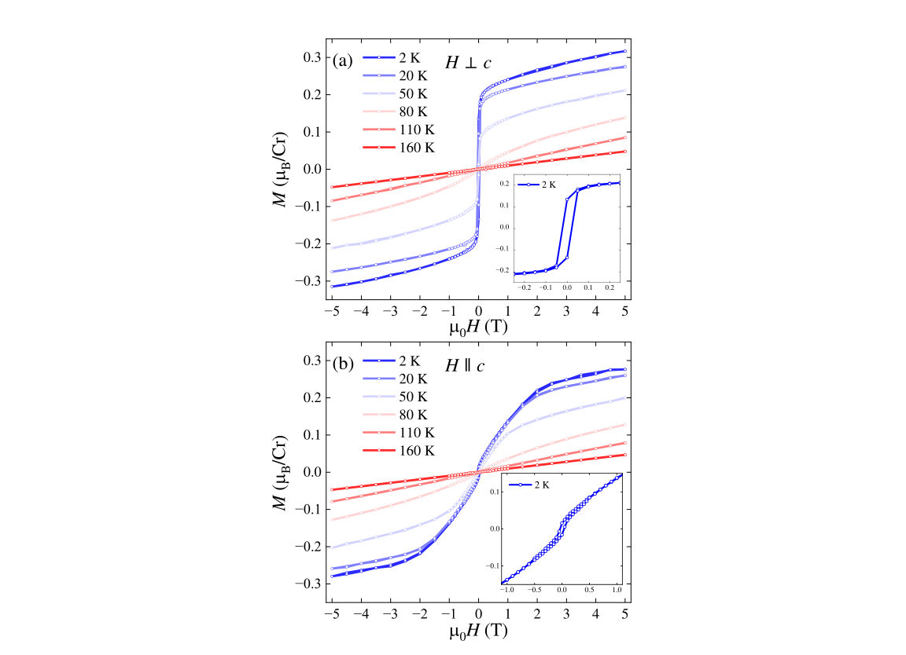
<figcaption class="paper-figure-caption"><b>Fig 4.</b> FIG. 4. Magnetization as a function of applied field measured at various temperatures for (a) H ⊥c and (b)</figcaption>
</figure>
<figure class="paper-figure-card">
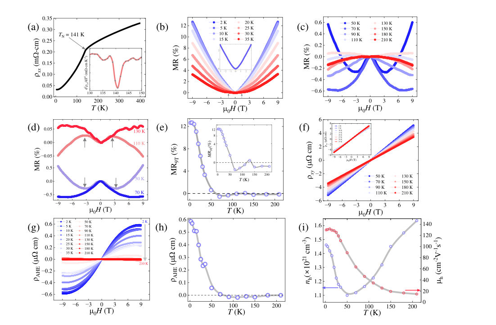
<figcaption class="paper-figure-caption"><b>Fig 5.</b> FIG. 5. Magnetotransport measurements on Cr1/4NbS2. (a) Temperature dependence of ρxx(T) measured</figcaption>
</figure>
</div>
<p><strong>Summary.</strong> This paper reports the first successful growth of single crystals of $ ext{Cr}_{1/4}   ext{NbS}_2$, a material proposed to be an altermagnet. By measuring its structural, thermal, and transport properties, the authors confirm its magnetic ordering temperature and observe transport signatures consistent with quantum diffusive behavior, establishing it as a key platform for altermagnetism research.</p>
<p><strong>Why it may be interesting.</strong> The investigation of altermagnetism in layered TMDs connects concepts of magnetic ordering, electronic structure, and transport phenomena, which are central themes in strongly correlated electron systems research.</p>
<details>
<summary>Detailed structure</summary>
<p><strong>Main problem.</strong> To experimentally investigate altermagnetism, a magnetic order challenging the simple ferromagnetic/antiferromagnetic classification, in the candidate material $ ext{Cr}_{1/4}   ext{NbS}_2$.</p>
<p><strong>Main result.</strong> The authors successfully grew high-quality single crystals of $    ext{Cr}_{1/4}   ext{NbS}_2$, confirming its hexagonal structure and observing signatures of quantum diffusive transport in magnetotransport measurements.</p>
<p><strong>Method.</strong> The study employed a combination of techniques, including single-crystal X-ray diffraction, heat capacity measurements, and magnetotransport measurements on single crystals.</p>
<p><strong>Model / system.</strong> The physical system is $    ext{Cr}_{1/4}   ext{NbS}_2$, a transition metal-intercalated transition metal dichalcogenide (TMD) proposed to exhibit altermagnetism. Its structure is confirmed to be hexagonal ($P6_3/mmc$), which is crucial for its magnetic properties.</p>
<p><strong>Key observables.</strong> Antiferromagnetic Néel temperature ($T_N \sim 141 	ext{ K}$), non-trivial magnetoresistance and Hall response, and hexagonal crystal symmetry.</p>
<p><strong>Important parameters / regimes.</strong> Temperatures ranging from 1.8 K to 300 K; magnetic fields up to 9 T.</p>
<p><strong>Assumptions / limitations.</strong> The study assumes that the observed magnetic and transport features are indicative of the predicted altermagnetic behavior, and that single-crystal measurements are necessary to probe anisotropic properties.</p>
<p><strong>Figures summary.</strong> Figure 1(a) shows the grown single crystals, and Figure 1(b) confirms the six-fold symmetry using Laue back-scattering diffraction.</p>
<p><strong>Paper structure.</strong> The paper follows a standard experimental structure: introduction establishing the need to study altermagnets, detailed characterization of the single crystals (structural, thermal, magnetic), and finally, transport measurements to confirm the predicted quantum phenomena.</p>
</details>
<details>
<summary>Abstract</summary>
<p>Altermagnetism is a rapidly emerging paradigm in condensed matter magnetism, yet the number of experimentally confirmed altermagnetic candidates remains remarkably limited. Cr$_{1/4}$NbS$_2$ has long been theoretically proposed as a promising altermagnet, but there are no reports on experimental investigation of single crystals. Here, we report the successful growth of high-quality single crystals of Cr$_{1/4}$NbS$_2$ and present its structural, thermal, magnetic, and transport properties. Single-crystal X-ray diffraction provides detailed crystallographic information and confirms the hexagonal crystal symmetry ($P6_3/mmc$), one of the criteria for altermagnetic behavior. Resistivity and heat capacity measurements unambiguously identify an antiferromagnetic Néel temperature of $T_N \sim 141$ K. Magnetotransport measurements reveal non-trivial features in the magnetoresistance and Hall response, indicative of quantum diffusive transport phenomena. Cr$_{1/4}$NbS$_2$, synthesized here for the first time in single-crystalline form, therefore serves as an experimental platform for probing the rich spectrum of phenomena predicted for altermagnetic materials.</p>
</details>
<p><sub><a href="#top">↑ back to top</a></sub></p>

<p><a id="paper-2610.18130"></a></p>
<h3 id="distance-prediction-for-quantum-codes"><a href="http://arxiv.org/abs/2610.18130v1">Distance Prediction for Quantum Codes</a></h3>
<p><strong>Authors:</strong> Nadav Schneider, Eliya Nachmani<br>
<strong>Type:</strong> theory · <strong>Category:</strong> quantum information and computing · <strong>PDF:</strong> <a href="https://arxiv.org/pdf/2610.18130v1">https://arxiv.org/pdf/2610.18130v1</a><br>
<strong>Analysis basis:</strong> full PDF text, analyzed in chunks</p>
<div class="figure-strip-hint">↔ Scroll figures horizontally</div>
<div class="paper-figures-scroll">
<figure class="paper-figure-card">

<figcaption class="paper-figure-caption"><b>Fig 1.</b> Figure 1: Distance estimation for bivariate bicycle codes through two approaches: computationally intensive heuristic search and orders of magnitude more efficient inference using BB-Net. Numbers refer to a full benchmark evaluation.</figcaption>
</figure>
<figure class="paper-figure-card">
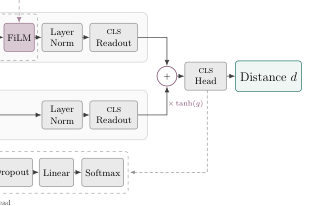
<figcaption class="paper-figure-caption"><b>Fig 2.</b> Figure 2: BB-Net architecture. A BB code is processed by two encoders; The polynomial encoder applies self-attention to monomial tokens and is conditioned on the code parameters through FiLM layers. In parallel, the Tanner spectral encoder processes Fourier-character tokens using attention as well. Each branch produces a code latent representation, which is combined through a learned gated residual connection. The fused representation then passed to a classification head.</figcaption>
</figure>
<figure class="paper-figure-card">
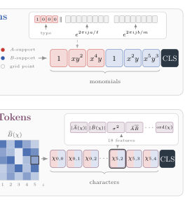
<figcaption class="paper-figure-caption"><b>Fig 3.</b> Figure 3: BB-Net tokenization and embedding. A BB code specified by sparse polynomials A and B is mapped to two complementary representations: (i) polynomial tokens encode monomial supports on Zℓ× Zm with the type (A,B) indicator as a one-hot vector and the first eight Fourier harmonics, represented by sine and cosine components along each lattice dimension, yielding a 32-dimensional positional representation. (ii) Tanner spectral tokens encode the responses of the full polynomials at each group character χ using 18-dimensional character features. Learned CLS tokens are used as latent vector aggregators for the downstream classification task.</figcaption>
</figure>
<figure class="paper-figure-card">

<figcaption class="paper-figure-caption"><b>Fig 4.</b> Figure 4: The x-axis denotes the minimum distance threshold t, and the y-axis reports the accuracy computed over codes whose distance satisfies d ≥t. Thus, moving to the right restricts the evalua- tion to increasingly high-distance codes. This was examined on three subsets: the whole benchmark, certified exact distances, and upper bound, unresolved distances.</figcaption>
</figure>
<figure class="paper-figure-card">
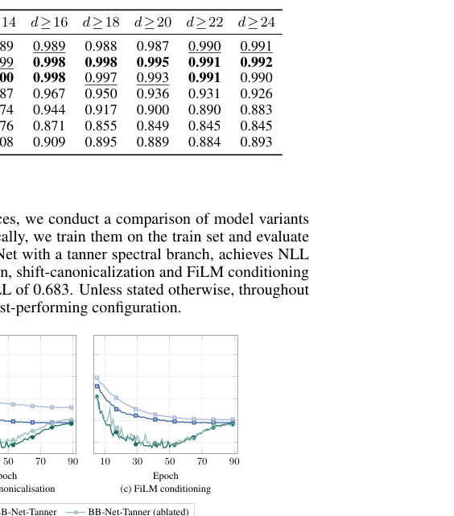
<figcaption class="paper-figure-caption"><b>Fig 5.</b> Figure 5: Bold curves denote the best configuration, including augmentation, shift canonicalisation, and FiLM conditioning; lighter curves show the corresponding model with the component named in each panel removed.</figcaption>
</figure>
</div>
<p><strong>Summary.</strong> This paper addresses the computational bottleneck in finding the minimum distance of quantum error-correcting codes, particularly qLDPC codes. The authors introduce BB-Net, an attention-based neural network that learns to predict this critical distance metric. By successfully automating this calculation, BB-Net accelerates the search for novel, high-performance quantum codes.</p>
<p><strong>Why it may be interesting.</strong> While focused on quantum codes, the application of advanced ML architectures (attention mechanisms, spectral analysis) to solve a hard combinatorial problem is relevant to developing predictive tools for complex quantum systems.</p>
<details>
<summary>Detailed structure</summary>
<p><strong>Main problem.</strong> The core challenge is the computationally hard problem of determining the minimum distance ($d$) of quantum error-correcting codes, which dictates their fault-tolerance capability.</p>
<p><strong>Main result.</strong> The proposed neural network, BB-Net, achieves high accuracy in predicting the code distance, significantly outperforming state-of-the-art heuristics while drastically reducing computational time.</p>
<p><strong>Method.</strong> The authors developed BB-Net, an attention-based neural network that processes the algebraic structure of Bivariate Bicycle (BB) codes using two complementary token sets: polynomial and Tanner spectral representations.</p>
<p><strong>Model / system.</strong> The work focuses on quantum Low-Density Parity-Check (qLDPC) codes, specifically the Bivariate Bicycle (BB) family, which are used for quantum error correction (QEC). The distance $d$ is the minimum weight of a nontrivial logical operator.</p>
<p><strong>Key observables.</strong> The minimum distance ($d$) of the quantum code, and the prediction accuracy (e.g., 96.39% on the test set).</p>
<p><strong>Important parameters / regimes.</strong> Code parameters ($\ell, m, n, k$), the computational budget (comparing $10^4$ times runtime differences), and the structure of the stabilizer checks ($H_X, H_Z$).</p>
<p><strong>Assumptions / limitations.</strong> The distance calculation is NP-hard, necessitating the use of ML prediction as a practical alternative to exhaustive search.</p>
<p><strong>Figures summary.</strong> Figures compare distance estimation times (heuristic vs. BB-Net) and detail the BB-Net architecture, showing the polynomial and spectral encoding branches. Tables present performance metrics and ablation study results.</p>
<p><strong>Paper structure.</strong> The paper establishes the computational bottleneck of distance finding, introduces the BB-Net architecture utilizing polynomial and spectral tokenization, trains the network on heuristic-derived data, and validates its superior performance in predicting code distances.</p>
</details>
<details>
<summary>Abstract</summary>
<p>The distance of a quantum code is a fundamental metric that dictates its error-correction capability. While quantum low-density parity-check (qLDPC) families such as Bivariate Bicycle (BB) codes offer a promising pathway to low-overhead fault-tolerant quantum computing, computing their distance is challenging. Current exact solvers and even search heuristics that provide a distance upper bound suffer from severe computational bottlenecks, restricting the discovery of optimal codes. In this paper, we construct a dataset of BB codes with corresponding distance upper bounds obtained through high-budget heuristic searches. We introduce BB-Net, an attention-based neural network architecture for predicting the distance of BB codes. It achieves 96.39% accuracy on the reference distances in the test set, compared with 94.86% for state-of-the-art heuristics with a budget of up to $10^{4}$ times more computational runtime. On a subset with certified exact distances, BB-Net achieves 98.94%. By relieving the distance-calculation bottleneck, BB-Net enables faster screening of large code spaces, particularly in ML-driven search pipelines, and thereby can accelerate the discovery of novel quantum error-correcting codes, an important capability for advancing scalable fault-tolerant quantum computing. Our code is publicly available: https://github.com/NadavSc/BBNet</p>
</details>
<p><sub><a href="#top">↑ back to top</a></sub></p>

<p><a id="paper-2610.17883"></a></p>
<h3 id="dynamics-of-low-energy-wave-packets-in-the-one-dimensional-quantum-heisenberg-ferromagnet"><a href="http://arxiv.org/abs/2610.17883v1">Dynamics of low energy wave packets in the one-dimensional quantum Heisenberg ferromagnet</a></h3>
<p><strong>Authors:</strong> Mateusz Kwaśnicki, Marcin Napiórkowski, Sören Petrat, Michał Pietruszka<br>
<strong>Type:</strong> theory · <strong>Category:</strong> other · <strong>PDF:</strong> <a href="https://arxiv.org/pdf/2610.17883v1">https://arxiv.org/pdf/2610.17883v1</a><br>
<strong>Analysis basis:</strong> full PDF text, analyzed in chunks</p>
<div class="figure-strip-hint">↔ Scroll figures horizontally</div>
<div class="paper-figures-scroll">
<figure class="paper-figure-card">
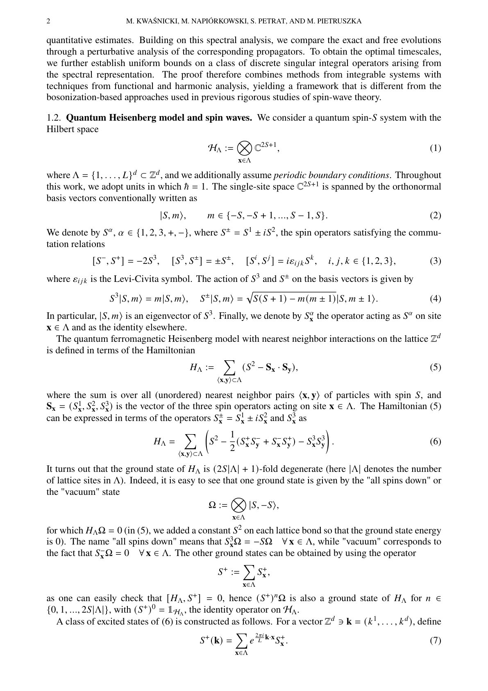
<figcaption class="paper-figure-caption"><b>Fig 1.</b> Low-resolution page preview, page 2</figcaption>
</figure>
<figure class="paper-figure-card">
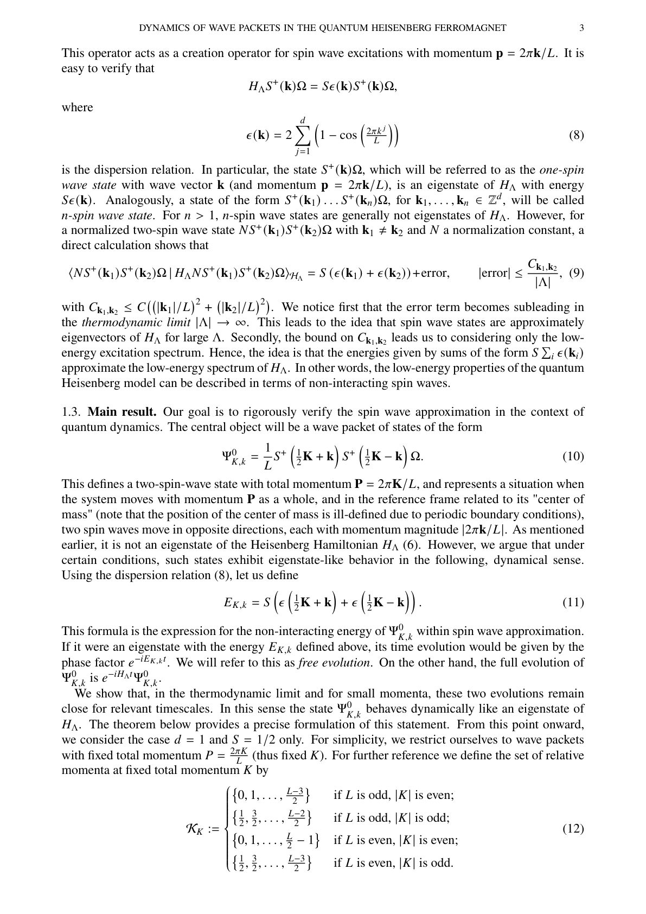
<figcaption class="paper-figure-caption"><b>Fig 2.</b> Low-resolution page preview, page 3</figcaption>
</figure>
<figure class="paper-figure-card">
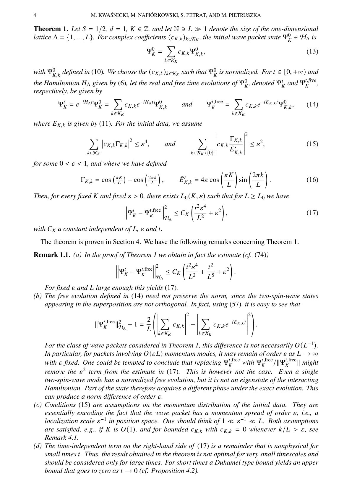
<figcaption class="paper-figure-caption"><b>Fig 3.</b> Low-resolution page preview, page 4</figcaption>
</figure>
<figure class="paper-figure-card">

<figcaption class="paper-figure-caption"><b>Fig 4.</b> Low-resolution page preview, page 5</figcaption>
</figure>
<figure class="paper-figure-card">
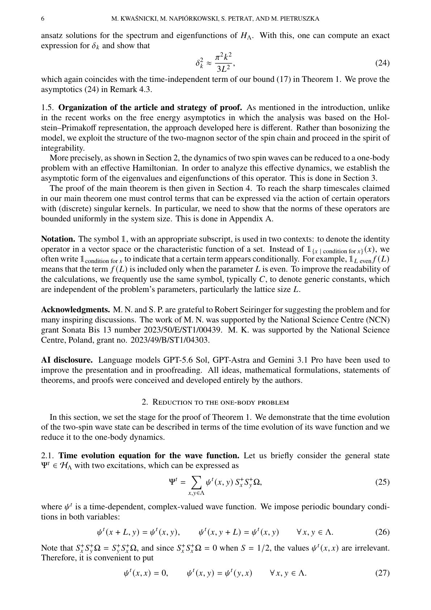
<figcaption class="paper-figure-caption"><b>Fig 5.</b> Low-resolution page preview, page 6</figcaption>
</figure>
</div>
<p><strong>Summary.</strong> This paper rigorously justifies the use of spin-wave theory for describing low-energy quantum dynamics in the 1D Heisenberg ferromagnet. By analyzing the difference between the exact and free time evolution for two-magnon wave packets, the authors establish a quantitative bound on the approximation error. This provides a powerful theoretical tool for understanding magnetic excitations in quantum materials.</p>
<p><strong>Why it may be interesting.</strong> This work provides a rigorous mathematical foundation for a standard approximation (spin-wave theory) used extensively in condensed matter physics to study magnetic excitations, which is crucial for understanding many-body dynamics.</p>
<details>
<summary>Detailed structure</summary>
<p><strong>Main problem.</strong> The primary goal is to provide a rigorous mathematical justification for using spin-wave theory to describe the low-energy quantum dynamics of the one-dimensional Heisenberg ferromagnet.</p>
<p><strong>Main result.</strong> The authors establish a quantitative bound showing that the difference between the exact time evolution and the free evolution of two-magnon wave packets decays according to a specific functional form involving time and system size.</p>
<p><strong>Method.</strong> The analysis combines techniques from integrable systems, functional analysis, and harmonic analysis, focusing on bounding the norm difference between the exact and approximate time evolution operators.</p>
<p><strong>Model / system.</strong> The system is the spin-1/2 quantum Heisenberg ferromagnet on a 1D lattice. The dynamics are governed by the Hamiltonian $H_{\Lambda} = \sum_{\langle x,y
angle \subset \Lambda} (S^2 - \mathbf{S}_x \cdot \mathbf{S}_y)$, and the focus is on low-energy excitations (magnons) in the two-magnon sector.</p>
<p><strong>Key observables.</strong> The norm distance $\lVert \Psi_t^K - \Psi_{t, 	ext{free}}^K 
Vert^2_{\mathcal{H}_\Lambda}$ between the exact and free time evolutions.</p>
<p><strong>Important parameters / regimes.</strong> The analysis is performed in the thermodynamic limit ($|\Lambda| 	o \infty$), for small momentum spread ($\epsilon$), and restricted to the two-magnon sector.</p>
<p><strong>Assumptions / limitations.</strong> The initial state must satisfy specific constraints related to the momentum spread $\epsilon$, and the result is restricted to the two-magnon subspace.</p>
<p><strong>Paper structure.</strong> The paper develops the rigorous bound by analyzing the difference between the exact and free evolution, utilizing the integrable structure of the two-magnon sector and employing advanced mathematical tools like the Periodic Discrete Hilbert Transform.</p>
</details>
<details>
<summary>Abstract</summary>
<p>Spin wave theory plays a central role in the analysis of low-energy properties of the quantum ferromagnetic Heisenberg model. In this work, we present a first step towards a rigorous justification of this approximation in the context of quantum dynamics in one dimension. According to spin wave theory, the evolution of a spin wave state should be well approximated by its free evolution with the appropriate energy of free quasiparticles called magnons. Our main result establishes this idea rigorously for a class of spin wave packets. We focus on spin-$\frac{1}{2}$ systems, and consider wave packets composed of two magnons. We argue our result is optimal with respect to the timescales.</p>
</details>
<p><sub><a href="#top">↑ back to top</a></sub></p>

<p><a id="paper-2610.18731"></a></p>
<h3 id="finite-energy-two-way-assisted-capacities-exact-formulas-for-multimode-loss-and-fading"><a href="http://arxiv.org/abs/2610.18731v1">Finite-energy two-way assisted capacities: Exact formulas for multimode loss and fading</a></h3>
<p><strong>Authors:</strong> Stefano Pirandola, Gaetana Spedalieri<br>
<strong>Type:</strong> theory · <strong>Category:</strong> quantum information and computing · <strong>PDF:</strong> <a href="https://arxiv.org/pdf/2610.18731v1">https://arxiv.org/pdf/2610.18731v1</a><br>
<strong>Analysis basis:</strong> full PDF text, analyzed in chunks</p>
<div class="figure-strip-hint">↔ Scroll figures horizontally</div>
<div class="paper-figures-scroll">
<figure class="paper-figure-card">

<figcaption class="paper-figure-caption"><b>Fig 1.</b> FIG. 1. Three-mode example with η = (0.8, 0.4, 0.1). (a) The exact capacity from (6) compared with two feasible allocations. The dotted line is Bη = −log2(0.2 · 0.6 · 0.9) ≃3.21090. (b) The solution of (17). All modal means are positive at finite N &gt; 0, although the weakest-mode fraction is very small at low energy. The curves approach the high-energy fractions derived in Appendix D. Each point is obtained by scalar root solving; no Gaussian optimization assumption enters the converse.</figcaption>
</figure>
<figure class="paper-figure-card">
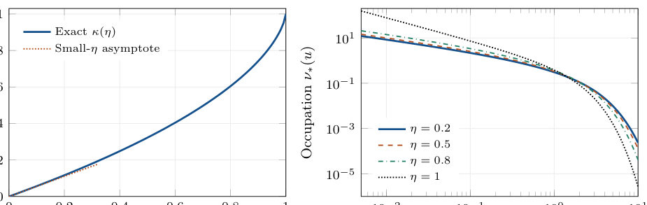
<figcaption class="paper-figure-caption"><b>Fig 2.</b> FIG. 2. Broadband two-way capacities and optimal spectra. (a) The exact coefficient κ(η) in (38); the dotted segment is its small-η asymptote. (b) Optimal occupations at the same total power for four constant transmissivities. The dimensionless frequency is u = ω p</figcaption>
</figure>
<figure class="paper-figure-card">
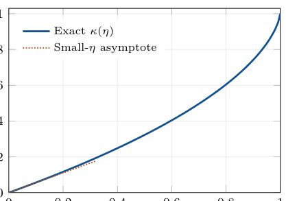
<figcaption class="paper-figure-caption"><b>Fig 3.</b> Figure 1 compares this optimum with simpler feasible allocations over a range of budgets.</figcaption>
</figure>
<figure class="paper-figure-card">

<figcaption class="paper-figure-caption"><b>Fig 4.</b> FIG. 3. Role of fading information for Φp = p id+(1−p)L0 at p = 1/2. The exact advance-information (blue) and receiver- information (orange) capacities are compared with bounds on every unobserved assisted capacity (gray). The dashed edge is a converse; the solid edge is achievable. All rates count every optical channel use, including blocked and vacuum slots.</figcaption>
</figure>
<figure class="paper-figure-card">

<figcaption class="paper-figure-caption"><b>Fig 5.</b> FIG. 4. Structure of the proof. The single-mode block estimate (lemma 1) yields the adaptive replica and finite-list bounds (lemmas 3 and 5). Scalar duality and spectral tail estimates turn these into the continuum converse. The sector resource (lemma 2) supplies finite-dimensional hashing, first for discrete modes and then for spectral intervals. Together these branches prove theorem 4. Evaluating the flat-profile integral gives theorem 5. The threshold statements also use the unconstrained resource comparison and public vacuum randomization, as detailed in Appendices E and I.</figcaption>
</figure>
</div>
<p><strong>Summary.</strong> This paper derives exact formulas for the fundamental capacities (quantum, entanglement, private, and key) achievable in quantum communication over lossy, multimode channels. By imposing finite-energy constraints, the authors show that these different capacities are equal and provide explicit rules for optimally allocating limited photon resources across different spectral modes. This work is vital for advancing the theory and engineering of energy-efficient quantum optical communication systems.</p>
<p><strong>Why it may be interesting.</strong> This work provides rigorous, energy-constrained benchmarks for quantum communication protocols, which is crucial for designing practical quantum networks using optical fiber or free-space links where loss and fading are inevitable.</p>
<details>
<summary>Detailed structure</summary>
<p><strong>Main problem.</strong> The paper determines the exact two-way quantum and secret-key capacities for quantum communication tasks over multimode bosonic loss and fading channels.</p>
<p><strong>Main result.</strong> The authors establish that under finite-energy constraints, the quantum, entanglement, private, and secret-key capacities all coincide, yielding closed-form expressions dependent on the channel loss and energy budget.</p>
<p><strong>Method.</strong> The analysis employs techniques like sector teleportation, finite-energy converse arguments, and optimization calculus (Lagrange multipliers) to find the optimal photon allocation across multiple modes.</p>
<p><strong>Model / system.</strong> The system models quantum communication through multimode bosonic loss and fading channels, which can be extended to continuous frequency-dependent loss under a power constraint.</p>
<p><strong>Key observables.</strong> Two-way quantum capacity ($Q_2$), entanglement distribution capacity ($D_2$), private capacity ($P_2$), and secret-key capacity ($K_2$).</p>
<p><strong>Important parameters / regimes.</strong> Mean photon-number constraint ($N$) or mean input power ($P$); channel transmissivities ($\eta_j$ or $\eta(\omega)$).</p>
<p><strong>Assumptions / limitations.</strong> The analysis assumes the availability of local quantum operations and two-way classical communication, and it distinguishes between observed and unobserved fading realizations.</p>
<p><strong>Figures summary.</strong> Figure 1 illustrates a three-mode example comparing the exact capacity against two feasible allocations and the derived optimal allocation.</p>
<p><strong>Paper structure.</strong> The paper builds from discrete multimode loss channels to continuous frequency-dependent loss, establishing capacity identities ($Q_2=D_2=P_2=K_2$) and deriving optimal energy allocation rules for both finite and continuous settings.</p>
</details>
<details>
<summary>Abstract</summary>
<p>We study quantum communication, entanglement distribution, and secret-key generation through multimode bosonic loss and fading channels, assisted by local quantum operations and two-way classical communication. Using sector teleportation, we determine the exact two-way quantum and secret-key capacities of multimode pure-loss channels under a mean photon-number constraint, allowing arbitrary adaptive quantum protocols. We extend these results to continuous frequency-dependent loss under a power constraint and identify the optimal allocation of photons among optical modes. For constant loss over an unlimited bandwidth, we obtain a closed-form capacity proportional to the square root of power. For randomly varying loss, we determine exact finite-energy capacities when the channel realization is publicly revealed, distinguishing knowledge before and after transmission. When fading remains unobserved, we derive capacity bounds and explicit formulas for an on/off channel. We also establish strong-converse bounds, with exact thresholds for the deterministic loss models considered here, observed fading, and unobserved fading with finitely many possible transmissivities. Under mean energy constraints, these thresholds generally exceed the corresponding finite-energy capacities. These results guide energy allocation and provide benchmarks for energy-constrained optical quantum communication with multimode signals and variable loss.</p>
</details>
<p><sub><a href="#top">↑ back to top</a></sub></p>

<p><a id="paper-2610.17612"></a></p>
<h3 id="from-syndromes-to-computation-a-general-framework-for-logical-operations-in-quantum-error-correcting-codes"><a href="http://arxiv.org/abs/2610.17612v1">From Syndromes to Computation: A General Framework for Logical Operations in Quantum Error-Correcting Codes</a></h3>
<p><strong>Authors:</strong> Hunter Nelson, Arshag Danageozian, ChunJun Cao, Sophia E. Economou, Edwin Barnes<br>
<strong>Type:</strong> theory · <strong>Category:</strong> quantum information and computing · <strong>PDF:</strong> <a href="https://arxiv.org/pdf/2610.17612v1">https://arxiv.org/pdf/2610.17612v1</a><br>
<strong>Analysis basis:</strong> full PDF text, analyzed in chunks</p>
<div class="figure-strip-hint">↔ Scroll figures horizontally</div>
<div class="paper-figures-scroll">
<figure class="paper-figure-card">

<figcaption class="paper-figure-caption"><b>Fig 1.</b> FIG. 1. Geometric organization of equal- and unequal-syndrome logical gates. Each vertex represents one Pauli-rotation generator, labeled by its logical Pauli content relative to the common syndrome-carrying reference E (or Eµ for each partition in panel c). Here B1, B2, . . . denote independent generators for commuting logical Pauli operators, whose products label the vertices of the logical square or cube. a) Four equal-syndrome Pauli generators form a rank-two logical square {E, EB1, EB2, EB1B2}. At angle π/4, the four Pauli generators multiply to a stabilizer up to a sign fixed by the rotation directions and implement a logical Clifford operation. b) Eight equal-syndrome Pauli...</figcaption>
</figure>
<figure class="paper-figure-card">

<figcaption class="paper-figure-caption"><b>Fig 2.</b> FIG. 2. Representation of the Pauli-root construction of a logical T-type gate as a Fano plane. Each point represents one equal-syndrome pair whose product is the same logical Pauli L. The seven points are the seven nonzero syndromes in a rank-three syndrome space. Each line contains a triple {u, v, u+v} and hence the three equal-syndrome pairs of one six-rotation phase gate S or S† construction. All seven points together give the seven pairs, or fourteen physical rotations, of the T-gate construction. For the direct T-gate identity all fourteen rotations may be taken with the same sign. If instead the gate is reconstructed from the seven overlapping S/S†</figcaption>
</figure>
<figure class="paper-figure-card">
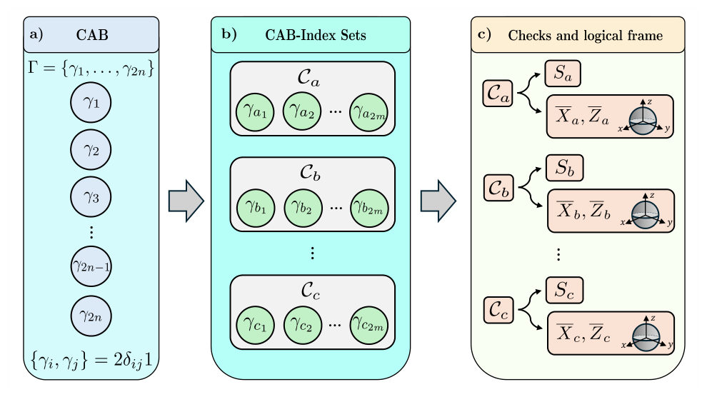
<figcaption class="paper-figure-caption"><b>Fig 3.</b> FIG. 3. Visual representation of a CAB presentation. (a) A Clifford algebra basis Γ = {γ1, . . . , γ2n} provides binary coordinates for the Pauli group. (b) CAB indices are organized into pairwise-disjoint sets Ca. (c) The monomial on each set defines a stabilizer check, while quadratic monomials within the same set define a logical Pauli frame. Candidate syndrome-partition Pauli generators are expressed in the same index language, so their stabilizer syndromes and products can be read directly from CAB-index overlaps and symmetric differences.</figcaption>
</figure>
<figure class="paper-figure-card">
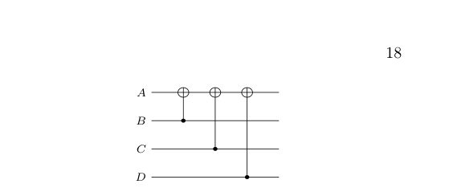
<figcaption class="paper-figure-caption"><b>Fig 4.</b> FIG. 5. The multi-source CNOT with logical qubits B, C, and D as controls and logical qubit A as their common target.</figcaption>
</figure>
<figure class="paper-figure-card">
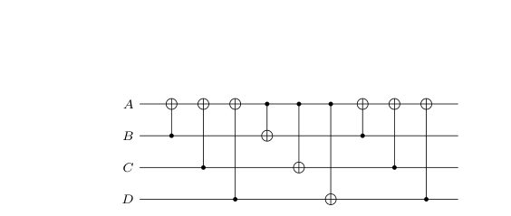
<figcaption class="paper-figure-caption"><b>Fig 5.</b> FIG. 4. Logical action of the four-qubit complement gate written as a sequence of CNOT operations.</figcaption>
</figure>
</div>
<p><strong>Summary.</strong> This paper introduces a general, syndrome-based framework for designing fault-tolerant logical gates in quantum error-correcting codes. By relating logical operations directly to the stabilizer syndromes of physical Pauli rotations, the authors provide systematic methods to construct low-weight gates on various qLDPC codes. This advances the understanding of how code structure dictates computational capability.</p>
<p><strong>Why it may be interesting.</strong> While focused on abstract coding theory, the systematic construction of logical gates is crucial for realizing any quantum computation, including those involving complex interactions relevant to AMO physics or quantum simulation.</p>
<details>
<summary>Detailed structure</summary>
<p><strong>Main problem.</strong> The paper develops a general framework to systematically design fault-tolerant logical quantum gates (both Clifford and non-Clifford) within Quantum Error-Correcting Codes (QECCs). It aims to unify the construction process beyond previous limitations.</p>
<p><strong>Main result.</strong> The framework establishes stabilizer syndromes as a constructive link, allowing the explicit, low-weight construction of various logical gates (like addressed T gates and C^rZ gates) on specific codes such as BB and Mirror qLDPC codes.</p>
<p><strong>Method.</strong> The core method involves using the stabilizer syndromes of commuting Pauli rotations to derive an exact codespace-preservation condition. This is supplemented by analytic constructions using Clifford algebra bases (CABs) to solve syndrome constraints.</p>
<p><strong>Model / system.</strong> The study focuses on stabilizer codes, particularly quantum low-density parity-check (qLDPC) codes like the Bivariate-Bicycle (BB) and Mirror codes, and the recursive hypercube construction. These codes are used to encode quantum information.</p>
<p><strong>Key observables.</strong> Stabilizer syndromes, gate weight, code distance (d), and the resulting logical gate type (e.g., CNOT, T-gate).</p>
<p><strong>Important parameters / regimes.</strong> Code parameters $[[n, k, d]]$, the general generator weight bound $\lceil d/2 
ceil$, and the rotation angles for non-Clifford operations.</p>
<p><strong>Assumptions / limitations.</strong> The framework assumes that logical operations can be systematically organized by analyzing the commutation relations (syndromes) of the physical Pauli rotations.</p>
<p><strong>Figures summary.</strong> The notes mention tables summarizing bounded physical searches for logical gates on the $[[16, 4, 4]]$ and $[[64, 8, 8]]$ hypercube codes, grouping actions by family.</p>
<p><strong>Paper structure.</strong> The paper develops the general syndrome-partition condition, applies it to existing qLDPC codes, utilizes analytic constructions via Clifford algebra bases, and finally examines the resulting fault-tolerance properties.</p>
</details>
<details>
<summary>Abstract</summary>
<p>Fault-tolerant quantum computation requires error-correcting codes that not only protect quantum information but also support useful logical operations with practical physical realizations. Here we develop a general framework in which the stabilizer syndromes of commuting Pauli rotations directly organize logical-gate design. We derive an exact codespace-preservation condition valid at arbitrary rotation angles, providing a common stabilizer-level description for CSS and non-CSS codes and for both Clifford and non-Clifford operations. A particularly useful equal-syndrome specialization reduces Clifford gate design to stabilizer factorization, yields a general generator weight bound of $\lceil d/2\rceil$ for distance-$d$ codes, and systematically extends to logical rotations higher in the Clifford hierarchy. Applied to bivariate-bicycle (BB) and non-CSS Mirror qLDPC codes, the framework gives explicit low-weight Clifford and controlled-phase gates. Our implementations yield new low-weight gates, including an addressed $T$ gate on the $[[16,4,4]]$ BB code, $T$-type rotations on the $[[64,8,8]]$ BB code, and CCZ-, CS-, and $T$-type operations on the $[[36,6,6]]$ Mirror code. We also develop analytic constructions using Clifford algebra bases, which turn the syndrome constraints into explicit algebraic relations and provide a systematic route to logical addressability. We use this approach to analytically construct addressed CNOT, SWAP, controlled, and CCZ-type gates on recursive hypercube codes. An independent construction on middle quantum Reed--Muller codes yields C${}^r$Z gates that saturate the equal-syndrome weight bound. These results establish stabilizer syndromes as a constructive link between the stabilizer structure of a quantum code, the logical computations it can directly support, and the fault-tolerance properties of their physical realizations.</p>
</details>
<p><sub><a href="#top">↑ back to top</a></sub></p>

<p><a id="paper-2610.18827"></a></p>
<h3 id="gaussian-entanglement-and-quantum-communication-geodesic-optimization-and-multimode-bounds"><a href="http://arxiv.org/abs/2610.18827v1">Gaussian entanglement and quantum communication: geodesic optimization and multimode bounds</a></h3>
<p><strong>Authors:</strong> Hemant K. Mishra, Mark M. Wilde<br>
<strong>Type:</strong> theory · <strong>Category:</strong> quantum information and computing · <strong>PDF:</strong> <a href="https://arxiv.org/pdf/2610.18827v1">https://arxiv.org/pdf/2610.18827v1</a><br>
<strong>Analysis basis:</strong> full PDF text, analyzed in chunks</p>
<div class="figure-strip-hint">↔ Scroll figures horizontally</div>
<div class="paper-figures-scroll">
<figure class="paper-figure-card">

<figcaption class="paper-figure-caption"><b>Fig 1.</b> Figure 1: The reference replacement in Theorem 3.5, shown for two partially transposed symplectic eigenvalues. Only eigenvalues below the vacuum threshold are raised. The construction acts on covariance matrices in a proof; it is not a channel implementing partial transposition. The corresponding increase W+ −W ⪰0 is ordinary Gaussian displacement noise on the reference.</figcaption>
</figure>
<figure class="paper-figure-card">

<figcaption class="paper-figure-caption"><b>Fig 2.</b> Figure 2: Geometric parity symmetrization for a product input covariance matrix V = V1 ⊕V2. Blocks here refer to the two copies, not to the two parties. Parity on the first copy is a local unitary across the grouped bipartition A1A2 : B1B2. The geometric midpoint is parity invariant and therefore has no cross-copy blocks. Its diagonal blocks X1, X2 need not equal W11, W22. This construction stays Gaussian and proves additivity without averaging Gaussian density operators.</figcaption>
</figure>
<figure class="paper-figure-card">
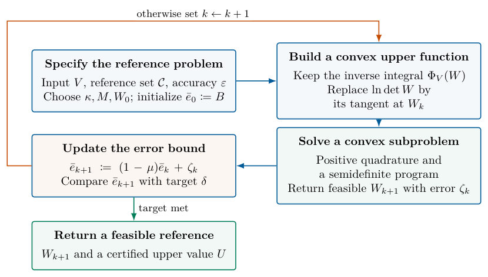
<figcaption class="paper-figure-caption"><b>Fig 3.</b> Figure 3: Classical computation of a Gaussian-reference entanglement bound. The two right-hand boxes implement one convex-majorization iteration; they do not represent quantum operations. The maintained scalar ¯ek is an upper bound on the unknown objective error ek, provided every inner error ζk includes quadrature, optimization, and rounding errors and the returned reference is feasible. The original unregularized value also requires the separate correction in (6.2). A certified inner objective gap, not an unverified solver termination flag, is required for the guarantee.</figcaption>
</figure>
<figure class="paper-figure-card">

<figcaption class="paper-figure-caption"><b>Fig 4.</b> Figure 4: A faithful separation at v = 1.01 within the family V (v, 0.3). The solid curve evaluates the Gaussian optimum from Theorem 7.3. The dashed line is the entropy of the pure input V (1, 0.3) and therefore an upper bound, not an exact curve, for both unrestricted measures at every v ≥1. The marked point is the analytic lower bound from (7.24); it lies above the dashed line. The endpoint v = 1 is pure, whereas every v &gt; 1 is faithful.</figcaption>
</figure>
<figure class="paper-figure-card">
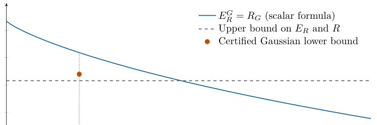
<figcaption class="paper-figure-caption"><b>Fig 5.</b> Figure 4 compares the scalar Gaussian optimum with the rigorous unrestricted upper bound. The counterexample rules out a general Gaussian-optimality statement for the forward REE and for the Gaussian-reference Rains optimization. It does not determine the unrestricted values of this mixed state: the first line of (7.21) is an upper bound. It also does not contradict Gaussian optimality for reverse relative entropy of entanglement [RLAB26]. The position of the variable reference in relative entropy is essential.</figcaption>
</figure>
</div>
<p><strong>Summary.</strong> This paper tackles the challenge of quantifying entanglement and communication capacity for noisy quantum channels using Gaussian states. It develops sophisticated convex optimization frameworks to compute Gaussian-restricted entanglement measures like Rains entanglement. The results provide rigorous, computationally bounded estimates for extractable entanglement and secret key rates under realistic physical constraints.</p>
<p><strong>Why it may be interesting.</strong> This work is highly relevant to quantum optics and open quantum systems as it provides concrete, computationally tractable bounds for quantifying entanglement and communication capacity when noise and loss are present.</p>
<details>
<summary>Detailed structure</summary>
<p><strong>Main problem.</strong> The paper develops rigorous methods to compute Gaussian-restricted versions of entanglement measures, such as relative entropy of entanglement and Rains entanglement, which are crucial for quantifying quantum resources in noisy communication channels.</p>
<p><strong>Main result.</strong> It establishes key identities, such as the equality between Gaussian Rains entanglement and Gaussian PPT relative entropy, and provides polynomial-time complexity bounds for calculating extractable entanglement and secret key rates.</p>
<p><strong>Method.</strong> The authors employ advanced convex optimization techniques, including integral representations derived from the relative entropy, and utilize specialized convex-majorization algorithms for numerical computation.</p>
<p><strong>Model / system.</strong> The analysis focuses on bosonic Gaussian states, which are compactly described by their means and covariance matrices, modeling quantum information transmission using light.</p>
<p><strong>Key observables.</strong> Relative entropy of entanglement (REE), Rains entanglement (RG), extractable entanglement, and secret key rates.</p>
<p><strong>Important parameters / regimes.</strong> Input-energy constraints, covariance matrices (V, W), and the required accuracy bits for numerical computation.</p>
<p><strong>Assumptions / limitations.</strong> The primary assumption is the restriction to Gaussian states, which provides a tractable, though potentially suboptimal, upper bound compared to general quantum states.</p>
<p><strong>Figures summary.</strong> The notes do not provide a summary of figures, but mention comparisons of derived bounds with achievable rates for two- and three-mode examples.</p>
<p><strong>Paper structure.</strong> The paper progresses from establishing the mathematical foundations of Gaussian entanglement measures via path integrals, to developing convex optimization frameworks, deriving operational bounds for communication tasks, and finally applying these bounds to specific channel simulations.</p>
</details>
<details>
<summary>Abstract</summary>
<p>Loss and noise limit the use of light to distribute entanglement, transmit quantum information, and establish secret keys. Gaussian states have a compact description in terms of means and covariance matrices, but their entanglement still requires global optimization. We develop a framework for computing Gaussian-restricted versions of the relative entropy of entanglement and Rains entanglement. An integral representation reveals a convex geometry under matrix geometric means and reduces Gaussian Rains entanglement to relative entropy minimized over Gaussian states with positive partial transpose. We obtain unique optimal reference states and additivity for independent Gaussian input states. Our convex-majorization algorithm has an explicit geometric convergence rate, uniform in the faithful regularization parameter and valid for pure input states. Controlled numerical integration and approximate convex subproblem solutions give a bit-complexity bound that is polynomial in accuracy bits for each fixed rational input covariance matrix, with explicit dependence on covariance size. These calculations bound extractable entanglement and, through the relative entropy of entanglement, extractable secret key. Teleportation simulation, energy allocation, and a convex optimization of passive-basis loss cores give bounds on quantum and private communication under an input-energy constraint, allowing arbitrary two-way classically assisted protocols. Two- and three-mode examples compare the bounds with achievable rates, including matching pure-loss benchmarks. Finally, we separate the Gaussian-restricted quantities from their unrestricted counterparts and give a photon-number truncation method with controlled error for computing the latter.</p>
</details>
<p><sub><a href="#top">↑ back to top</a></sub></p>

<p><a id="paper-2610.17826"></a></p>
<h3 id="how-many-switches-does-two-hamiltonian-universality-require"><a href="http://arxiv.org/abs/2610.17826v1">How many switches does two-Hamiltonian universality require?</a></h3>
<p><strong>Authors:</strong> Matas Garbaravičius, Michael M. Wolf<br>
<strong>Type:</strong> theory · <strong>Category:</strong> quantum information and computing · <strong>PDF:</strong> <a href="https://arxiv.org/pdf/2610.17826v1">https://arxiv.org/pdf/2610.17826v1</a><br>
<strong>Analysis basis:</strong> full PDF text, analyzed in chunks</p>
<div class="figure-strip-hint">↔ Scroll figures horizontally</div>
<div class="paper-figures-scroll">
<figure class="paper-figure-card">
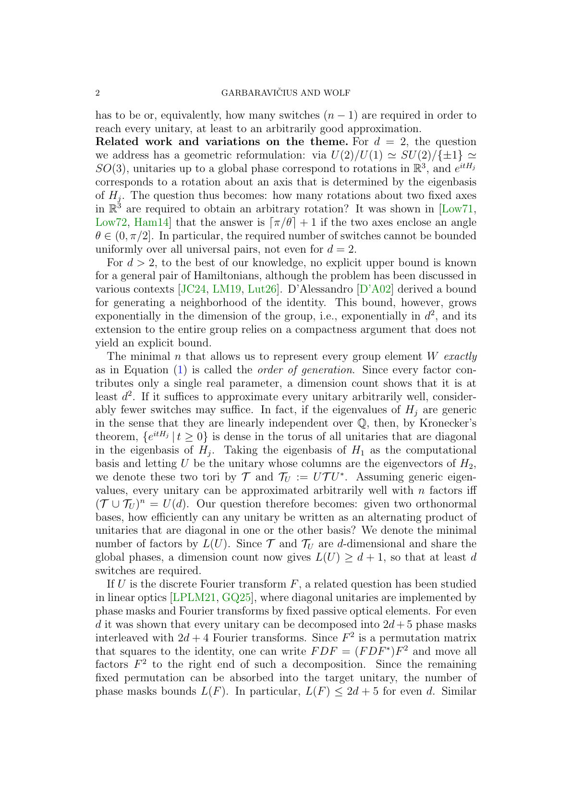
<figcaption class="paper-figure-caption"><b>Fig 1.</b> Low-resolution page preview, page 2</figcaption>
</figure>
<figure class="paper-figure-card">

<figcaption class="paper-figure-caption"><b>Fig 2.</b> Low-resolution page preview, page 3</figcaption>
</figure>
<figure class="paper-figure-card">

<figcaption class="paper-figure-caption"><b>Fig 3.</b> Low-resolution page preview, page 4</figcaption>
</figure>
<figure class="paper-figure-card">
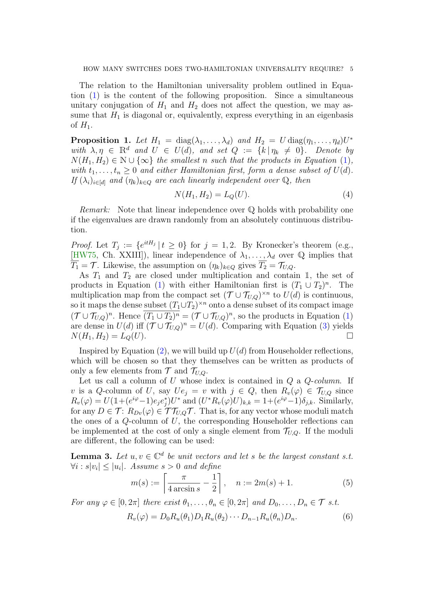
<figcaption class="paper-figure-caption"><b>Fig 4.</b> Low-resolution page preview, page 5</figcaption>
</figure>
<figure class="paper-figure-card">
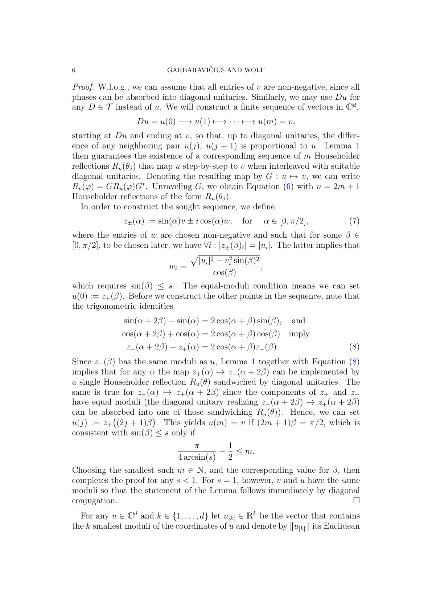
<figcaption class="paper-figure-caption"><b>Fig 5.</b> Low-resolution page preview, page 6</figcaption>
</figure>
</div>
<p><strong>Summary.</strong> This paper analyzes the problem of 'two-Hamiltonian universality,' determining the minimum number of times one must switch between two fixed Hamiltonian controls to generate any desired unitary transformation in a quantum system. It establishes that this required number scales linearly with the system dimension $d$ for generic cases. The results provide crucial theoretical bounds for quantum control protocols, which are vital for quantum computing and simulation.</p>
<p><strong>Why it may be interesting.</strong> This work provides rigorous, quantitative bounds on the complexity of quantum control, which is fundamental to designing quantum gates and understanding the limitations of physical implementations of quantum algorithms.</p>
<details>
<summary>Detailed structure</summary>
<p><strong>Main problem.</strong> The paper determines the minimal number of alternating Hamiltonian switches required to synthesize any arbitrary unitary evolution in a $d$-dimensional quantum system.</p>
<p><strong>Main result.</strong> For generic Hamiltonians, the required number of switches scales linearly with the dimension $d$ in expectation, and specific bounds (like $9d$) are derived for certain structured cases.</p>
<p><strong>Method.</strong> The authors relate the problem to finding the minimal length representation of unitaries as products of elements diagonal in two different eigenbases, utilizing techniques from group theory and graph theory.</p>
<p><strong>Model / system.</strong> The model involves a $d$-dimensional quantum system whose evolution is governed by alternating unitary operators derived from two fixed Hamiltonians, $H_1$ and $H_2$.</p>
<p><strong>Key observables.</strong> The minimal number of switches ($n$ or $\ell$) required to achieve a target unitary $W \in U(d)$, and the approximation error $\|W - V\|$.</p>
<p><strong>Important parameters / regimes.</strong> The dimension $d$, the structure of the change-of-basis matrix between the two eigenbases, and the spectral properties (linear independence over $\mathbb{Q}$) of the eigenvalues.</p>
<p><strong>Assumptions / limitations.</strong> The main results often assume the spectra of the Hamiltonians are sufficiently generic (eigenvalues linearly independent over $\mathbb{Q}$), although bounds are extended to non-generic cases.</p>
<p><strong>Paper structure.</strong> The paper progresses from establishing the general problem of two-Hamiltonian universality to deriving constructive upper bounds using representations of unitaries via Householder reflections, culminating in explicit bounds on the required number of switches and approximation errors.</p>
</details>
<details>
<summary>Abstract</summary>
<p>Any pair of sufficiently generic Hamiltonians on $\mathbb{C}^d$ generates the full unitary group, i.e., any $W\in U(d)$ can be synthesized to arbitrary precision by alternating between the two evolutions for suitably chosen durations. For any given pair of Hamiltonians, the minimal number of switches required to cover the entire group is at least $d$ and unbounded in general. Despite this, we show that it scales linearly in $d$ in expectation. Assuming that the two spectra are sufficiently generic, we derive constructive upper bounds on the minimal switching number as a function of the change-of-basis matrix between the two eigenbases. In particular, if this matrix has a column whose entries all have equal moduli, as for a complex Hadamard matrix, then $9d$ switches suffice to reach every unitary. To obtain these results, we construct a short exact representation of any unitary as a product of unitaries that are alternately diagonal in two given bases. All bounds are extended to non-generic spectra and bounded evolution times.</p>
</details>
<p><sub><a href="#top">↑ back to top</a></sub></p>
<hr>
<p>
<a href="index.html">← Index</a>
 · <a href="papers_04.html">← Previous</a> · <a href="papers_06.html">Next →</a>
</p>
<hr>

</body>
</html>
